data <- read.csv2("data/Porter_Serra_2020.csv")Chapter 4
Code Call-out 4.1: Wild cluster bootstrap implementation
To see the difference between the wild cluster bootstrap described in Section 4.2.3.2 of the book and other clustering options such as standard cluster bootstrap or clustered standard errors we will set up an example by hand of the wild cluster bootstrap. We will do this with data provided by Porter and Serra (2020) who conducted a field experiment which sought to test whether student exposure to engaging and successful women instructors in early economics classes increases the likelihood that female students go on to major in economics. The dataset is provided under the name Porter_Serra_2020.csv, and we will open this data as data below:
Following Porter and Serra (2020) we will estimate the following linear probability model (LPM) \[Y_{i} = \beta_0 + \beta_1 dt_i + \beta_2 dT_i + \beta_3 dt_i \times dT_i + \delta \mathbf{X}_i + \varepsilon_i\] where we use identical notation from their paper. Treatment was randomly applied at the class level in 2016, and classes also existed in 2015, but no treatment was applied. Above, \(Y_i\) is a student’s (binary) decision of whether or not to major in economics (econmajor), \(dt_i\) (yr_2016) a dummy equal to one if she took the class in 2016 and zero if she took a class in 2015, and \(dT_i\) (treatment_class) is a dummy equal to one if she is in a treatment class, and zero if she is in a control class. The interaction between these two dummies (treat2016) is the coefficient of interest and \(\mathbf{X}_i\) is a vector of individual, demographic and class controls such as if the course was taught by a female professor (female_prof), if the student is an in-state student (instate), if the student is in freshman year (freshman), if the student is american (american), the student’s cumulative GPA (ACumGPA), the student’s grade in their Principles of Economics course (gradePrinciples) and if the student take a class with a limit of 40 students (small_class). As treatment is assigned at the class level (class_fe2), and as there are few clusters (12 clusters), the authors proceed to conduct inference using a wild cluster bootstrap. We conduct this procedure below.
Here in particular we are interested in the parameter \(\beta_3\) which under difference-in-difference assumptions will identify the effect of female role models on future enrollment in an economics major. Before examining this process, we will estimate the LPM in order to get an estimate of the coefficient of interest \(\widehat{\beta}_3\), along with the (traditional) cluster-robust standard error \(se\left(\widehat{\beta}_3\right)\), and resulting \(t\)-statistic for the test of a null effect: \(t=\left(\widehat{\beta}_3 - 0\right)/se\left(\widehat{\beta}_3\right)\). We will do this using the felm function from the lfe package to estimate our regression model. The usage of this function includes a four-part formula where the first part is a conventional formula as in lm, the second part is the variables that determine the fixed effects (or 0 if no fixed effects are desired), the third part is for an IV formula (or 0 if OLS is desired) and the last part is a variable to use if clustered standard errors are desired. As we are not estimating with fixed effects or IV we indicate 0 in the second and third portion of the formula:
data$ACumGPA <- as.numeric(data$ACumGPA)
data$gradePrinciples <- as.numeric(data$gradePrinciples)
library(lfe)
LPM <- felm(data = data, subset = (female == 1),
formula = econmajor ~ yr_2016 + treatment_class + treat2016 +
female_prof + instate + freshman + american + ACumGPA +
gradePrinciples + small_class | 0 | 0 | class_fe2)
summary(LPM)
Call:
felm(formula = econmajor ~ yr_2016 + treatment_class + treat2016 + female_prof + instate + freshman + american + ACumGPA + gradePrinciples + small_class | 0 | 0 | class_fe2, data = data, subset = (female == 1))
Residuals:
Min 1Q Median 3Q Max
-0.37556 -0.10810 -0.07859 -0.04663 0.97552
Coefficients:
Estimate Cluster s.e. t value Pr(>|t|)
(Intercept) 0.510487 0.158101 3.229 0.00131 **
yr_2016 -0.027713 0.030071 -0.922 0.35711
treatment_class -0.030105 0.024313 -1.238 0.21612
treat2016 0.080141 0.036483 2.197 0.02842 *
female_prof 0.020855 0.034479 0.605 0.54549
instate 0.013581 0.030251 0.449 0.65362
freshman 0.007603 0.029770 0.255 0.79851
american -0.191195 0.060462 -3.162 0.00164 **
ACumGPA -0.109900 0.039162 -2.806 0.00517 **
gradePrinciples 0.045543 0.019751 2.306 0.02145 *
small_class -0.029513 0.029934 -0.986 0.32455
---
Signif. codes: 0 '***' 0.001 '**' 0.01 '*' 0.05 '.' 0.1 ' ' 1
Residual standard error: 0.2948 on 616 degrees of freedom
Multiple R-squared(full model): 0.0553 Adjusted R-squared: 0.03997
Multiple R-squared(proj model): 0.0553 Adjusted R-squared: 0.03997
F-statistic(full model, *iid*):3.606 on 10 and 616 DF, p-value: 0.0001122
F-statistic(proj model): 8.543 on 10 and 11 DF, p-value: 0.0007143 It can be seen that the coefficient of interest is 0.0801 (as per column 4 of Table 4 of Porter and Serra (2020)) with a cluster-robust standard error of 0.0364 and a resulting t-statistic of 2.197. Below, we store these values along with the residuals of this unrestricte regression \(\widehat{\varepsilon}\):
beta3_hat <- LPM$coefficients["treat2016",]
se_beta3_hat <- as.numeric(LPM$cse["treat2016"])
t_beta3_hat <- as.numeric(LPM$ctval["treat2016"])
eps_hat <- LPM$residualsBecause we are interested in considering the variation of data in a model where we assume the null hypothesis \(\beta_3=0\) is true, we will now impose this hypothesis, and re-estimate our model. We do this below, imposing the restriction \(\beta_3 = 0\) by simply omiting the treat2016 variable from the model, storing the restricted residuals from this regression as \(\tilde{\varepsilon}\).
LPM_r <- felm(data = data, subset = (female == 1),
formula = econmajor ~ yr_2016 + treatment_class +
female_prof + instate + freshman + american + ACumGPA +
gradePrinciples + small_class | 0 | 0 | class_fe2)
eps_tilde <- LPM_r$residualsThese restricted residuals eps_tilde above will be key in our wild cluster bootstrap procedure. For a given bootstrap replication, for each cluster we will assign a value of -1 or +1, and multiply the previous residuals by this (cluster-specific) value. This will maintain correlations between residuals fixed within each cluster, but allow correlations to vary between clusters. We will thus generate a new “sample” of data taking original data and updated residuals, resulting in a new outcome for \(Y_i\).
Below we will initialise this wild cluster bootstrap procedure, setting some large amount of bootstrap replicates (here 999), before storing the data we need as bsample using base R’s new pipe function \(|>\) to send the output from the left-hand command into the right-hand command. We will then also incorporate the residuals from above into this dataframe, so bsample contains all relevant covariates, as well as the restricted residuals. It is worth noting, that in practice, all we require from these covariates is the ability to form \(\widehat{Y}_i=\widehat\beta_0+\widehat\beta_1 dt_i + \widehat\beta_2 dT_i + \widehat\delta \mathbf{X}_i\), and we could actually just work with the quantity \(\widehat{Y}_i\) below (you may wish to confirm this to yourself by editing the code below). However, for ease of exposition we will work with the full set of covariates in code below, even though this is somewhat less efficient.
B = 999
WildClusterBootstrap <- data.frame(beta3 = rep(NA, B),
se_beta3 = rep(NA, B),
t_stat = rep(NA, B))
library(dplyr)
bsample <- data |> filter(female == 1) |>
select(econmajor, yr_2016, treatment_class, treat2016,
female_prof, instate, freshman, american, ACumGPA,
gradePrinciples, small_class, class_fe2)
bsample$eps_tilde = as.numeric(eps_tilde)Now let’s see what each iteration of a wild cluster bootstrap looks like. As we will generate our new sample of data by (randomly) selecting values of -1 or 1 for each cluster to form “resampled” residuals, we will start by drawing these “Rademacher” weights for each cluster. Below we do this by first generating a cluster-specific draw for each cluster \(g\) which assigns \(a_g = 1\) or \(a_g = -1\) with probability 0.5 (as seen in clusters). This value \(a_g\) is joined into our main data:
clusters <- data.frame(class_fe2 = unique(data$class_fe2),
ag = sample(c(-1,1), size = 12, replace = T))
print(clusters) class_fe2 ag
1 31 -1
2 5 -1
3 30 1
4 1 -1
5 3 1
6 9 1
7 2 -1
8 6 -1
9 4 -1
10 8 -1
11 7 -1
12 32 -1bsample <- bsample |> left_join(clusters, by = "class_fe2")Now, based on this draw and the original errors from the restricted model, we will generate the new set of bootstrap errors, which below we call berrors:
bsample <- bsample |> mutate(berrors = eps_tilde * ag)Finally, below we will generate our new resampled outcome variable beconmajor from covariates, restricted regression estimates, and our resampled error term berrors.
bsample <- bsample |>
mutate(beconmajor = LPM_r$beta["(Intercept)",] +
LPM_r$beta["yr_2016",] * yr_2016 +
LPM_r$beta["treatment_class",] * treatment_class +
LPM_r$beta["female_prof",] * female_prof +
LPM_r$beta["instate",] * instate +
LPM_r$beta["freshman",] * freshman +
LPM_r$beta["american",] * american +
LPM_r$beta["ACumGPA",] * ACumGPA +
LPM_r$beta["gradePrinciples",] * gradePrinciples +
LPM_r$beta["small_class",] * small_class +
berrors)With this data in hand, we estimate the non-restricted model exactly as we did so previously with felm. Below, we estimate this model, and examine summary output:
LPM_b <- felm(data = bsample,
formula = beconmajor ~ yr_2016 + treatment_class +
treat2016 + female_prof + instate + freshman +
american + ACumGPA + gradePrinciples +
small_class | 0 | 0 | class_fe2)
summary(LPM_b)
Call:
felm(formula = beconmajor ~ yr_2016 + treatment_class + treat2016 + female_prof + instate + freshman + american + ACumGPA + gradePrinciples + small_class | 0 | 0 | class_fe2, data = bsample)
Residuals:
Min 1Q Median 3Q Max
-0.97361 -0.04629 0.07725 0.11270 0.96485
Coefficients:
Estimate Cluster s.e. t value Pr(>|t|)
(Intercept) 0.5574399 0.1600957 3.482 0.000533 ***
yr_2016 -0.0002106 0.0316311 -0.007 0.994690
treatment_class 0.0256711 0.0205719 1.248 0.212553
treat2016 -0.0043226 0.0444533 -0.097 0.922568
female_prof 0.0051554 0.0292544 0.176 0.860173
instate -0.0143464 0.0287746 -0.499 0.618255
freshman 0.0025777 0.0326288 0.079 0.937059
american -0.2054160 0.0600976 -3.418 0.000672 ***
ACumGPA -0.1304524 0.0407253 -3.203 0.001429 **
gradePrinciples 0.0505332 0.0222470 2.271 0.023463 *
small_class 0.0011914 0.0257835 0.046 0.963160
---
Signif. codes: 0 '***' 0.001 '**' 0.01 '*' 0.05 '.' 0.1 ' ' 1
Residual standard error: 0.2944 on 616 degrees of freedom
Multiple R-squared(full model): 0.06137 Adjusted R-squared: 0.04613
Multiple R-squared(proj model): 0.06137 Adjusted R-squared: 0.04613
F-statistic(full model, *iid*):4.028 on 10 and 616 DF, p-value: 2.281e-05
F-statistic(proj model): 26.83 on 10 and 11 DF, p-value: 2.693e-06 You will note here that the coefficient of interest (that on treat2016) is small and insignificant. This should not be surprising to us, as we have imposed that this coefficient should be zero in the process where we generated beconmajor previously. The idea of this process is that in this way we should have some idea of the variation we may expect in parameter estimates when the true parameter actually is zero. If we observe that our true estimate greatly exceeds these “null” estimates, we may be willing to conclude that the original effect is real. We store the relevant values from our regression model below to calculate a t-statistic from this bootstrap replicate.
WildClusterBootstrap$beta3[1] <- LPM_b$beta["treat2016",]
WildClusterBootstrap$se_beta3[1] <- LPM_b$cse["treat2016"]
WildClusterBootstrap$t_stat[1] <- LPM_b$ctval["treat2016"]We wish to see how extreme our original t-statistic is compared to many t-statistics generated in this way, where the null is imposed. Thus, we will now repeat the previous bootstrap replicate \(B-1\) more times in a loop, so that we have \(B\) t-statistics.
for (b in 2:B) {
# Erase from common data frame the data of previous replication
bsample <- bsample |> select(-c(ag, berrors, beconmajor))
# Add new replication data
clusters <- data.frame(class_fe2 = unique(data$class_fe2),
ag = sample(c(-1,1), size = 12, replace = T))
bsample <- bsample |> left_join(clusters, by = "class_fe2") |>
mutate(berrors = eps_tilde * ag) |>
mutate(beconmajor = LPM_r$beta["(Intercept)",] +
LPM_r$beta["yr_2016",] * yr_2016 +
LPM_r$beta["treatment_class",] * treatment_class +
LPM_r$beta["female_prof",] * female_prof +
LPM_r$beta["instate",] * instate +
LPM_r$beta["freshman",] * freshman +
LPM_r$beta["american",] * american +
LPM_r$beta["ACumGPA",] * ACumGPA +
LPM_r$beta["gradePrinciples",] * gradePrinciples +
LPM_r$beta["small_class",] * small_class +
berrors)
# Estimate artificial model
LPM_b <- felm(data = bsample,
formula = beconmajor ~ yr_2016 + treatment_class +
treat2016 + female_prof + instate + freshman +
american + ACumGPA + gradePrinciples +
small_class | 0 | 0 | class_fe2)
# Store values
WildClusterBootstrap$beta3[b] <- LPM_b$beta["treat2016",]
WildClusterBootstrap$se_beta3[b] <- LPM_b$cse["treat2016"]
WildClusterBootstrap$t_stat[b] <- LPM_b$ctval["treat2016"]
}We can see below what this “null distribution” of t-statistics looks like. It is not a surprise that these are centred around 0, because this is what our model has imposed. However, more interesting than this is to see they type of variation in t-statistics which we can expect in our data with null effects imposed. We can see, below, that this looks somewhat heavier-tailed than a standard t-distribution.
hist(WildClusterBootstrap$t_stat, breaks=20, xlab='Bootstrap t-statistics',
main=NULL)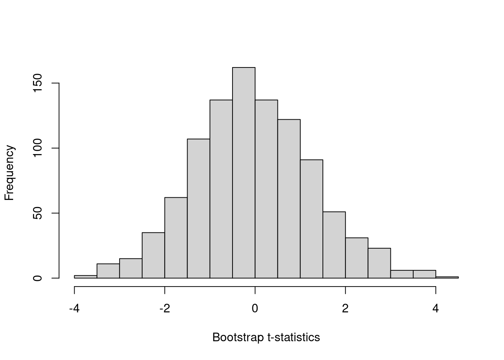
From this distribution we can calculate a p-value by asking what proportion of t-statistics from the null distribution exceed our estimated t-statistic from the unrestricted model. We do this below, observing that the p-value is quite close to that reported in Porter and Serra (2020) (who report a p-value of 0.089), only differing due to random variation in draws of the Rademacher weights.
pval <- mean(abs(WildClusterBootstrap$t_stat) >
abs(t_beta3_hat))
paste0("The p-value is: ", round(pval, 3))[1] "The p-value is: 0.109"We also could repeat this exercise with the bootest function from the fwildclusterboot developed by Fischer and Roodman (2021) and arrive to the same conclusion. This function works with the original model we estimated previously (LPM), and conducts an identical procedure to that which we have done above “by hand”. Any difference in p-values is incidental, owing to different random draws.
library(fwildclusterboot)
boot <- boottest(object = LPM,
B = 999,
param = "treat2016",
clustid = "class_fe2")
paste0("The p-value with the user-written function is: ",
round(boot$p_val, 3))[1] "The p-value with the user-written function is: 0.098"In principle, using such a library is likely the preferred way of conducting procedures such as the wild cluster bootstrap, however it is illustrative to see how it works in practice, as we do above. A nice element of user-written procedures such as that of Roodman et al. (2019) is that it also seamlessly returns other quantities of interest which we would have to generate ourselves above, such as confidence interval, which we can see below:
paste0("The confidence interval is: [",
round(boot$conf_int[1], 3),
",", round(boot$conf_int[2], 3), "].")[1] "The confidence interval is: [-0.023,0.16]."These values correspond closely to the original 95% CIs reported in the paper of [-0.015; 0.160].
Finally as a comparative exercise we may be interested in seeing how this procedure compares to a standard clustered bootstrap. While there are many ways we could do this – including quite easily by hand – we examine this below using the ClusterBootstrap library. It turns out that while the 95% CI on treat2016 coming from clustered bootstrap is narrower than the 95% CI from the wild cluster bootstrap (as expected), the difference is not so substantial in this particular case.
library(ClusterBootstrap)
set.seed(121316)
boot2 <- clusbootglm(model = econmajor ~ yr_2016 + treatment_class +
treat2016 + female_prof + instate + freshman +
american + ACumGPA + gradePrinciples +
small_class, data = data[data$female == 1,],
clusterid = class_fe2,
B = 1000)
boot2$percentile.interval 2.5% 97.5%
(Intercept) 0.216008932 0.87239955
yr_2016 -0.078094868 0.05213740
treatment_class -0.094479636 0.07732063
treat2016 -0.003676923 0.14911480
female_prof -0.064912611 0.10409076
instate -0.050397709 0.06425911
freshman -0.081318035 0.05434548
american -0.320376765 -0.07905032
ACumGPA -0.188034303 -0.02806940
gradePrinciples 0.009146654 0.08643697
small_class -0.106627894 0.08573364Code call-out 4.2: Exploring the Two-way Fixed Effect Model and Parameter Decompositions
Two-Way Fixed Effects Estimators and Heterogeneous Treatment Effects To understand the potential issues related to heterogeneous treatment effects over time and two-way fixed effect estimators, we will examine a pair of numerical examples. In particular, we will focus on the composition of the two way FE estimator \(\tau\) estimated from: \[ y_{st} = \gamma_s + \lambda_t + \tau w_{st} + \varepsilon_{st} \tag{1}\] where \(y_{st}\) is the outcome variable, \(\gamma_s\) and \(\lambda_t\) are state (unit) and time fixed effects, \(w_{st}\) is the binary treatment variable that takes the value of 1 if a state (unit) \(s\) is treated at time \(t\) and otherwise takes 0. We will work with a quite tractable example based on three units and 10 time periods, and will document how the approaches taken by Goodman-Bacon (2021) and by Chaisemartin and D’Haultfœuille (2020) to understand the two-way FE estimator compare.
The results from Goodman-Bacon (2021) and those from Chaisemartin and D’Haultfœuille (2020) are similar, however they take quite different paths to get there. Goodman-Bacon’s (like that laid out in Athey and Imbens (2022)) is “mechanical” in that it is based on the underlying difference-in-differences comparisons between all groups. The result in Chaisemartin and D’Haultfœuille (2020) is based on a potential outcomes frame-work, and counterfactuals under parallel trend assumptions. Thus to examine how these methods work requires somewhat different frameworks. In the case of Goodman-Bacon (2021), we should consider all possible DD comparisons, while in the case of Chaisemartin and D’Haultfœuille (2020) we should consider the treatment effect for each unit and time period, which requires knowing the observed and counterfactual state. While the approaches the two papers take to understand the content of the estimator differ, they refer to the same estimator, so always recover the same parameter estimate. To examine this in a more applied way, we will look at a simulated example.
To do this, let’s consider a panel of 3 states/areas over the 10 years (\(t\)) of 2000 to 2009. One of these units is entirely untreated (\(unit = 1\) or group \(U\)), one is treated at an early time period, 2003, (\(unit = 2\) or group \(k\)), and the other is treated at a later time period, 2006, (\(unit = 3\) or group \(l\)). We will construct a general structure for this data below:
Data <- data.frame(unit = ceiling(1:30/10), year = rep(2000:2009, 3))
head(Data) unit year
1 1 2000
2 1 2001
3 1 2002
4 1 2003
5 1 2004
6 1 2005We will consider a simple-case where the actual data-generating process is known as: \[y_{unit,t} = 2 + 0.2 \times (t - 2000) + 1 \times unit + \beta_1 \times post \times unit + \beta_2 \times post \times unit \times (t - treat).\] Here \(unit\) refers to the unit number listed above (1, 2 or 3), \(post\) indicates that a unit is receiving treatment in the relevant time period \(t\), and \(treat\) refers to the treatment period (2003 for unit 2, and 2006 for unit 3). Let’s generate treatment, time to treatment, and post-treatment variables in R:
Data$treat <- ifelse(Data$unit == 2, 2006, ifelse(Data$unit == 3, 2003, 0))
Data$time <- ifelse(Data$treat == 0, 0, Data$year - Data$treat)
Data$post <- ifelse(Data$time >= 0 & Data$treat != 0, 1, 0)This specification allows for each unit to have its own fixed effect, given that \(unit\) is multiplied by 1, and allows for a general time trend increasing by 0.2 units each period across the whole sample. These parameters are not so important, as what we care about are the treatment effects themselves. The impact of treatment comes from the units \(\beta_1\) and \(\beta_2\). The first of these, \(\beta_1\), captures an immediate unit-specific jump when treatment is implemented which remains stable over time. The second of these, \(\beta_2\), implies a trend break occurring only for the treated units once treatment comes into place. We will consider 2 cases below. In the first case \(\beta_1 = 1\) and \(\beta_2 = 0\) (a simple case with a constant treatment effect per unit):
Data$y1 <- 2 + (Data$year - 2000) * 0.2 + 1 * Data$unit + 1 * Data$post * Data$unit +
0 * Data$post * Data$unit * (Data$time)and in a second case \(\beta_1 = 1\) and \(\beta_2 = 0.45\). This is a more complex case in which there are heterogeneous treatment effects over time:
Data$y2 <- 2 + (Data$year - 2000) * 0.2 + 1 * Data$unit + 1 * Data$post * Data$unit +
0.45 * Data$post * Data$unit * (Data$time)These two cases are plotted next where the line with empty circles refers to group \(U\), the line with black filled circles refers to group \(k\) and the line with squares refers to group \(l\)
Show the plot code
library(ggplot2)
library(ggpubr)
p1 <- ggplot(data = Data, aes(x = year, y = y1, color = as.factor(unit))) +
geom_line(linetype = 1, size = 0.5) +
geom_point(aes(shape = as.factor(unit)), size = 2) +
scale_shape_manual(values = c(1, 16, 12)) +
scale_color_manual(values = c("black", "black", "black")) +
labs(x = "Time", y = "Outcome Variable") +
scale_x_continuous(breaks = seq(from = 2000, to = 2009, by = 2)) +
scale_y_continuous(breaks = seq(from = 0, to = 12, by = 2),
labels = seq(from = 0, to = 12, by = 2),
limits = c(0,12)) +
geom_vline(xintercept = 2002, color = "red", linetype = 2) +
geom_vline(xintercept = 2005, color = "red", linetype = 2) +
theme(legend.position = "none")
t1 <- ggplot() + geom_text(aes(x = 0, y = 0, label = "(a) Simple Decomposition")) +
theme_void()
p2 <- ggplot(data = Data, aes(x = year, y = y2, color = as.factor(unit))) +
geom_line(linetype = 1, size = 0.5) +
geom_point(aes(shape = as.factor(unit)), size = 2) +
scale_shape_manual(values = c(1, 16, 12)) +
scale_color_manual(values = c("black", "black", "black")) +
labs(x = "Time", y = "Outcome Variable") +
scale_x_continuous(breaks = seq(from = 2000, to = 2009, by = 2)) +
scale_y_continuous(breaks = seq(from = 0, to = 20, by = 5),
labels = seq(from = 0, to = 20, by = 5),
limits = c(0,20)) +
geom_vline(xintercept = 2002, color = "red", linetype = 2) +
geom_vline(xintercept = 2005, color = "red", linetype = 2) +
theme(legend.position = "none")
t2 <- ggplot() + geom_text(aes(x = 0, y = 0, label = "(b) Decomposition with trends")) +
theme_void()
ggarrange(plotlist = list(p1, p2, t1, t2), ncol = 2, nrow = 2, heights = c(0.9, 0.1))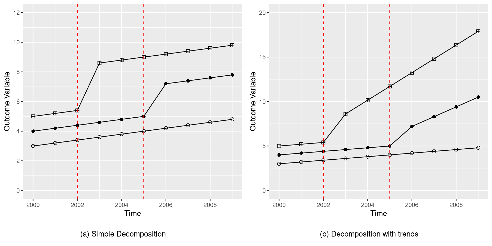
The Two-way Fixed Effect Estimator
First we will estimate the parameter by two-way fixed effects regression. This will provide us with the parameter estimate that both Goodman-Bacon (2021) and Chaisemartin and D’Haultfœuille (2020) will construct in a piece-wise fashion. This is done relatively simply in R. We simply estimate Equation 1 by linear regression using lm as laid out below:
case1 <- lm(data = Data,
formula = y1 ~ factor(unit) + factor(year) + post)
paste0("The parameter estimates by two-way fixed effects regression for the ",
"case 1 is: ", case1$coefficients["post"])[1] "The parameter estimates by two-way fixed effects regression for the case 1 is: 2.45454545454545"case2 <- lm(data = Data,
formula = y2 ~ factor(unit) + factor(year) + post)
paste0("The parameter estimates by two-way fixed effects regression for the ",
"case 2 is: ", case2$coefficients["post"])[1] "The parameter estimates by two-way fixed effects regression for the case 2 is: 3.80454545454545"Here we see that the coefficient of interest is 2.454545. We can see that this is between the two unit-specific jumps that occur with treatment (2 and 3). We will see below why it takes this particular weighted average.
Goodman-Bacon (2021) Decomposition
Using the values simulated above, let’s see how the Goodman-Bacon (2021) decomposition allows us to understand estimated treatment effects. We will consider both:
- (a) Simple Decomposition
- (b) Decomposition with trends
The methodology Goodman-Bacon (2021) decomposition suggests that we should calculate all \(2 \times 2\) combinations of states and time where post-treatment units are compared to “untreated” unit (laid out at more length in the book). In this example, this provides four specific effects, which contribute to \(\widehat{\tau}\) as a weighted mean. The specific effects desired are:
- A. \(\widehat{\beta}^{2\times2}_{kU}\) from the comparison of the early treated unit with the untreated unit.
- B. \(\widehat{\beta}^{2\times2}_{lU}\), from the comparison of the latter treated unit with the untreated unit.
- C. \(\widehat{\beta}^{2\times2,k}_{kl}\), from the comparison of the early and latter treated units, when the early unit begin to be treated.
- D. \(\widehat{\beta}^{2\times2,l}_{kl}\), from the comparison of the early and latter treated units, when the latter unit begin to be treated.
These will then be weighted as laid out in Goodman-Bacon (2021) to provide the regression-based estimate.
(a) Simple Decomposition
In this case the Goodman-Bacon (2021) methodology estimate \(\widehat{\tau}\) weighting the next four DD comparisons
Show the plot code
library(dplyr)
p1 <- ggplot(data = Data, aes(x = year, y = y1, color = as.factor(unit))) +
geom_line(linetype = 1, size = 0.5, aes(alpha = as.factor(unit))) +
geom_point(aes(shape = as.factor(unit), alpha = as.factor(unit)), size = 2) +
scale_alpha_manual(values = c(1,0.1,1)) +
scale_shape_manual(values = c(1, 16, 12)) +
scale_color_manual(values = c("black", "black", "black")) +
labs(x = "Time", y = "Outcome Variable") +
scale_x_continuous(breaks = seq(from = 2000, to = 2009, by = 2)) +
scale_y_continuous(breaks = seq(from = 0, to = 12, by = 2),
labels = seq(from = 0, to = 12, by = 2),
limits = c(0,12)) +
geom_vline(xintercept = 2002, color = "red", linetype = 2) +
geom_vline(xintercept = 2005, color = "red", linetype = 2) +
theme(legend.position = "none")
p2 <- ggplot(data = Data, aes(x = year, y = y1, color = as.factor(unit))) +
geom_line(linetype = 1, size = 0.5, aes(alpha = as.factor(unit))) +
geom_point(aes(shape = as.factor(unit), alpha = as.factor(unit)), size = 2) +
scale_alpha_manual(values = c(1,1,0.1)) +
scale_shape_manual(values = c(1, 16, 12)) +
scale_color_manual(values = c("black", "black", "black")) +
labs(x = "Time", y = "Outcome Variable") +
scale_x_continuous(breaks = seq(from = 2000, to = 2009, by = 2)) +
scale_y_continuous(breaks = seq(from = 0, to = 12, by = 2),
labels = seq(from = 0, to = 12, by = 2),
limits = c(0,12)) +
geom_vline(xintercept = 2002, color = "red", linetype = 2) +
geom_vline(xintercept = 2005, color = "red", linetype = 2) +
theme(legend.position = "none")
p3 <- Data %>% filter(year < 2006) %>%
ggplot(aes(x = year, y = y1, color = as.factor(unit))) +
geom_line(linetype = 1, size = 0.5, aes(alpha = as.factor(unit))) +
geom_point(aes(shape = as.factor(unit), alpha = as.factor(unit)), size = 2) +
scale_alpha_manual(values = c(0.1,1,1)) +
scale_shape_manual(values = c(1, 16, 12)) +
scale_color_manual(values = c("black", "black", "black")) +
labs(x = "Time", y = "Outcome Variable") +
scale_x_continuous(breaks = seq(from = 2000, to = 2009, by = 2),
limits = c(2000,2009)) +
scale_y_continuous(breaks = seq(from = 0, to = 12, by = 2),
labels = seq(from = 0, to = 12, by = 2),
limits = c(0,12)) +
geom_vline(xintercept = 2002, color = "red", linetype = 2) +
geom_vline(xintercept = 2005, color = "red", linetype = 2) +
theme(legend.position = "none")
p4 <- Data %>% filter(year >= 2003) %>%
ggplot(aes(x = year, y = y1, color = as.factor(unit))) +
geom_line(linetype = 1, size = 0.5, aes(alpha = as.factor(unit))) +
geom_point(aes(shape = as.factor(unit), alpha = as.factor(unit)), size = 2) +
scale_alpha_manual(values = c(0.1,1,1)) +
scale_shape_manual(values = c(1, 16, 12)) +
scale_color_manual(values = c("black", "black", "black")) +
labs(x = "Time", y = "Outcome Variable") +
scale_x_continuous(breaks = seq(from = 2000, to = 2009, by = 2),
limits = c(2000,2009)) +
scale_y_continuous(breaks = seq(from = 0, to = 12, by = 2),
labels = seq(from = 0, to = 12, by = 2),
limits = c(0,12)) +
geom_vline(xintercept = 2002, color = "red", linetype = 2) +
geom_vline(xintercept = 2005, color = "red", linetype = 2) +
theme(legend.position = "none")
t1 <- ggplot() +
geom_text(aes(x = 0, y = 0, label = "A. Early Group v/s Untreated Group"), size = 3) +
theme_void()
t2 <- ggplot() +
geom_text(aes(x = 0, y = 0, label = "B. Later Group v/s Untreated Group"), size = 3) +
theme_void()
t3 <- ggplot() +
geom_text(aes(x = 0, y = 0, label = "C. Early Group v/s Later Group Before 2006"),
size = 3) +
theme_void()
t4 <- ggplot() +
geom_text(aes(x = 0, y = 0, label = "D. Early Group v/s Later Group After 2003"),
size = 3) +
theme_void()
ggarrange(plotlist = list(t1, t2, p1, p2, t3, t4, p3, p4), ncol = 2, nrow = 4,
heights = c(0.1, 0.4, 0.1, 0.4))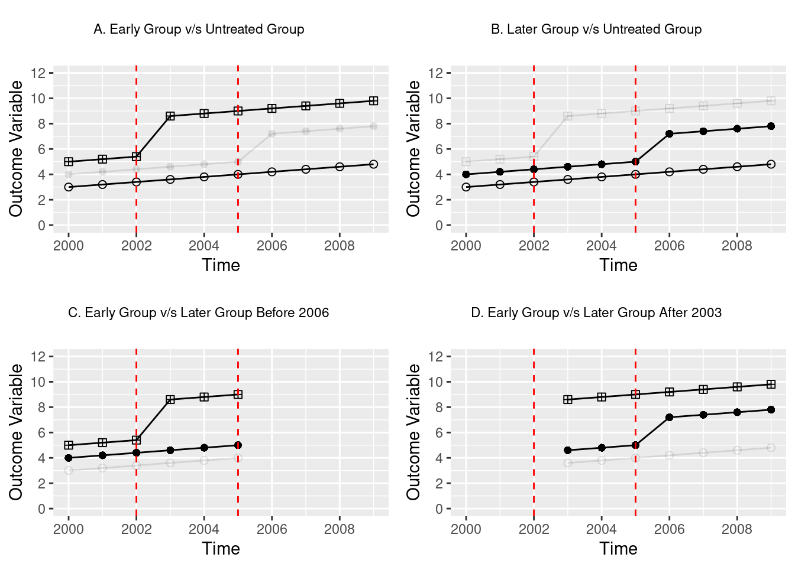
As seen in the plots, in the simple decomposition these effects are constants of 3 and 2 for early and later treated units given that the “treatment effect” is simply \(1 \times unit\) in each case.
A. Early Group v/s Untreated Group
In order to calculate the effects we start making the simple DD comparison of the untreated group \(U\) (\(unit = 1\)) with the early treated group \(k\) (\(unit = 3\)) getting \(\widehat{\beta}^{2 \times 2}_{kU}\) as \[\widehat{\beta}^{2 \times 2}_{kU} = \left( \overline{y}_k^{Post(k)} - \overline{y}_k^{Pre(k)} \right) - \left( \overline{y}_U^{Post(k)} - \overline{y}_U^{Pre(k)} \right)\] Where \(\overline{y}_k^{Post(k)}\) is the mean of the outcome variable for the early treated group \(k\) (\(unit = 3\)) posterior to treatment, from 2003, \(\overline{y}_k^{Pre(k)}\) is the mean for of the outcome variable for the early treated group \(U\) (\(unit = 3\)) prior to treatment, (up until 2002), and \(\overline{y}_U^{Post(k)}, \overline{y}_U^{Post(k)}\) are the analogous quantities for the untreated group \(U\) (\(unit = 1\))
(mean(Data$y1[Data$unit == 3 & Data$post == 1]) -
mean(Data$y1[Data$unit == 3 & Data$post == 0])) -
(mean(Data$y1[Data$unit == 1 & Data$year >= 2003]) -
mean(Data$y1[Data$unit == 1 & Data$year < 2003]))[1] 3This result also can be obtained from the linear regression with the canonical DD formula \[y_{unit,t} = \alpha_0 + \alpha_1 \times Post(k) + \alpha_2 \times \mathbf{1}(unit = 3) + \beta_{kU}^{2\times2} \times Post(k) \times \mathbf{1}(unit = 3) + \varepsilon_i\] Where \(Post(k)\) indicates that the year is equal or greater than the year where the group \(k\) (\(unit = 3\)) received the treatment (2003) and \(\mathbf{1}(unit = 3)\) indicates if the observation is from the early treated group \(k\) (\(unit = 3\))
summary(lm(y1 ~ factor(year >= 2003) + factor(unit) + factor(year >= 2003):factor(unit),
data = Data, subset = (unit != 2)))
Call:
lm(formula = y1 ~ factor(year >= 2003) + factor(unit) + factor(year >=
2003):factor(unit), data = Data, subset = (unit != 2))
Residuals:
Min 1Q Median 3Q Max
-0.6 -0.2 0.0 0.2 0.6
Coefficients:
Estimate Std. Error t value Pr(>|t|)
(Intercept) 3.2000 0.2236 14.311 1.54e-10 ***
factor(year >= 2003)TRUE 1.0000 0.2673 3.742 0.00178 **
factor(unit)3 2.0000 0.3162 6.325 1.01e-05 ***
factor(year >= 2003)TRUE:factor(unit)3 3.0000 0.3780 7.937 6.14e-07 ***
---
Signif. codes: 0 '***' 0.001 '**' 0.01 '*' 0.05 '.' 0.1 ' ' 1
Residual standard error: 0.3873 on 16 degrees of freedom
Multiple R-squared: 0.9804, Adjusted R-squared: 0.9767
F-statistic: 266.1 on 3 and 16 DF, p-value: 7.35e-14A third way to obtain this is from the next linear regression \[y_{unit,t} = \alpha_0 + \beta_{kU}^{2 \times 2} \times Post + \sum_{i = 2001}^{2009} \alpha_{i-2000} \times \mathbf{1}(year = i) + \alpha_{10} \times \mathbf{1}(unit = 3) + \varepsilon_i\] Where in this case \(Post\) indicates if the unit is treated (note for group \(U\) this will be always 0), \(\mathbf{1}(year = i)\) indicates if the observation is in period \(i \in \{2001, \ldots, 2009\}\) and \(\mathbf{1}(unit = 3)\) keep its meaning
summary(lm(y1 ~ post + factor(year) + factor(unit), data = Data, subset = (unit != 2)))
Call:
lm(formula = y1 ~ post + factor(year) + factor(unit), data = Data,
subset = (unit != 2))
Residuals:
Min 1Q Median 3Q Max
-1.047e-15 -3.168e-16 0.000e+00 3.168e-16 1.047e-15
Coefficients:
Estimate Std. Error t value Pr(>|t|)
(Intercept) 3.000e+00 6.276e-16 4.780e+15 <2e-16 ***
post 3.000e+00 7.501e-16 3.999e+15 <2e-16 ***
factor(year)2001 2.000e-01 7.686e-16 2.602e+14 <2e-16 ***
factor(year)2002 4.000e-01 7.686e-16 5.204e+14 <2e-16 ***
factor(year)2003 6.000e-01 8.553e-16 7.015e+14 <2e-16 ***
factor(year)2004 8.000e-01 8.553e-16 9.354e+14 <2e-16 ***
factor(year)2005 1.000e+00 8.553e-16 1.169e+15 <2e-16 ***
factor(year)2006 1.200e+00 8.553e-16 1.403e+15 <2e-16 ***
factor(year)2007 1.400e+00 8.553e-16 1.637e+15 <2e-16 ***
factor(year)2008 1.600e+00 8.553e-16 1.871e+15 <2e-16 ***
factor(year)2009 1.800e+00 8.553e-16 2.105e+15 <2e-16 ***
factor(unit)3 2.000e+00 6.276e-16 3.187e+15 <2e-16 ***
---
Signif. codes: 0 '***' 0.001 '**' 0.01 '*' 0.05 '.' 0.1 ' ' 1
Residual standard error: 7.686e-16 on 8 degrees of freedom
Multiple R-squared: 1, Adjusted R-squared: 1
F-statistic: 1.88e+31 on 11 and 8 DF, p-value: < 2.2e-16Now we store this result for posterior use
bku <- lm(y1 ~ post + factor(year) + factor(unit), data = Data,
subset = (unit != 2))$coefficient["post"]B. Later Group v/s Untreated Group
The next DD comparison we calculate is that which compares the later treated group \(l\) (\(unit = 2\)) with the untreated group \(U\) (\(unit = 1\)), resulting in \(\widehat{\beta}^{2 \times 2}_{lU}\). As above, we can generate this DD estimate in a number of ways (most simply by double-differencing with means), and this will then be stored.
blu <- lm(y1 ~ post + factor(year) + factor(unit), data = Data,
subset = (unit != 3))$coefficient["post"]
blupost
2 (mean(Data$y1[Data$unit == 2 & Data$post == 1]) -
mean(Data$y1[Data$unit == 2 & Data$post == 0])) -
(mean(Data$y1[Data$unit == 1 & Data$year >= 2006]) -
mean(Data$y1[Data$unit == 1 & Data$year < 2006]))[1] 2summary(lm(y1 ~ factor(year >= 2006) + factor(unit) + factor(year >= 2006):factor(unit),
data = Data, subset = (unit != 3)))
Call:
lm(formula = y1 ~ factor(year >= 2006) + factor(unit) + factor(year >=
2006):factor(unit), data = Data, subset = (unit != 3))
Residuals:
Min 1Q Median 3Q Max
-0.5 -0.3 0.0 0.3 0.5
Coefficients:
Estimate Std. Error t value Pr(>|t|)
(Intercept) 3.5000 0.1369 25.560 2.12e-14 ***
factor(year >= 2006)TRUE 1.0000 0.2165 4.619 0.000285 ***
factor(unit)2 1.0000 0.1936 5.164 9.42e-05 ***
factor(year >= 2006)TRUE:factor(unit)2 2.0000 0.3062 6.532 6.91e-06 ***
---
Signif. codes: 0 '***' 0.001 '**' 0.01 '*' 0.05 '.' 0.1 ' ' 1
Residual standard error: 0.3354 on 16 degrees of freedom
Multiple R-squared: 0.9571, Adjusted R-squared: 0.9491
F-statistic: 119.1 on 3 and 16 DF, p-value: 3.726e-11C. Early Group v/s Later Group Before 2006
Next we calculate the effects from the DD comparisons of early and later treated groups, up until the later treated group receives treatment (2006). This is: \[\widehat{\beta}^{2 \times 2, k}_{kl} \equiv \left( \overline{y}^{Mid(k,l)}_{k} - \overline{y}^{Pre(k)}_{k} \right) - \left( \overline{y}^{Mid(k,l)}_{l} - \overline{y}^{Pre(k)}_{l} \right)\] where \(\overline{y}^{Mid(k,l)}_{k}\) is the mean of the outcome variable for the early treated group \(k\) (\(unit = 3\)) in the period between the treatment for the group \(k\) and the group \(l\) (\(unit = 2\)), from 2003 to 2005, \(\overline{y}^{Pre(k)}_{k}\) is the mean for of the outcome variable for the early treated group \(k\) (\(unit = 3\)) previous to treatment, until 2002, and \(\overline{y}^{Mid(k,l)}_{l}, \overline{y}^{Pre(k)}_{l}\) are the analogous for the later treated group \(l\) (\(unit = 2\))
bklk <- lm(y1 ~ post + factor(year) + factor(unit), data = Data,
subset = (unit != 1 & year < 2006))$coefficient["post"]
bklkpost
3 (mean(Data$y1[Data$unit == 3 & (Data$year >= 2003 & Data$year < 2006)]) -
mean(Data$y1[Data$unit == 3 & Data$year < 2003])) -
(mean(Data$y1[Data$unit == 2 & (Data$year >= 2003 & Data$year < 2006)]) -
mean(Data$y1[Data$unit == 2 & Data$year < 2003]))[1] 3summary(lm(y1 ~ factor(year >= 2003) + factor(unit) + factor(year >= 2003):factor(unit),
data = Data, subset = (unit != 1 & year < 2006)))
Call:
lm(formula = y1 ~ factor(year >= 2003) + factor(unit) + factor(year >=
2003):factor(unit), data = Data, subset = (unit != 1 & year <
2006))
Residuals:
Min 1Q Median 3Q Max
-0.2 -0.2 0.0 0.2 0.2
Coefficients:
Estimate Std. Error t value Pr(>|t|)
(Intercept) 4.2000 0.1155 36.373 3.58e-10 ***
factor(year >= 2003)TRUE 0.6000 0.1633 3.674 0.006271 **
factor(unit)3 1.0000 0.1633 6.124 0.000282 ***
factor(year >= 2003)TRUE:factor(unit)3 3.0000 0.2309 12.990 1.17e-06 ***
---
Signif. codes: 0 '***' 0.001 '**' 0.01 '*' 0.05 '.' 0.1 ' ' 1
Residual standard error: 0.2 on 8 degrees of freedom
Multiple R-squared: 0.9918, Adjusted R-squared: 0.9887
F-statistic: 322.8 on 3 and 8 DF, p-value: 1.106e-08D. Early Group v/s Later Group After 2003
The last DD comparison is for early and later treated groups, starting from 2006 \[\widehat{\beta}^{2 \times 2, l}_{kl} \equiv \left( \overline{y}^{Post(l)}_{l} - \overline{y}^{Mid(k,l)}_{l} \right) - \left( \overline{y}^{Post(l)}_{k} - \overline{y}^{Mid(k,l)}_{k} \right)\] Where \(\overline{y}^{Post(l)}_{l}\) is the mean of the outcome variable for the later treated group \(l\) (\(unit = 2\)) in the period after this group received the treatment, from 2006, \(\overline{y}^{Mid(k,l)}_{l}\) is the mean for of the outcome variable for the later treated group \(l\) (\(unit = 2\)) in the period between the treatment for the group \(k\) (\(unit = 3\)) and the group \(l\), from 2003 to 2005, and \(\overline{y}^{Post(l)}_{k}, \overline{y}^{Mid(k,l)}_{k}\) are the analogous quantities for the early treated group \(k\) (\(unit = 3\)). We can generate and save this quantity as we have previously:
bkll <- lm(y1 ~ post + factor(year) + factor(unit), data = Data,
subset = (unit != 1 & year > 2002))$coefficient["post"]
bkllpost
2 (mean(Data$y1[Data$unit == 2 & Data$year > 2005]) -
mean(Data$y1[Data$unit == 2 & (Data$year >= 2003 & Data$year < 2006)])) -
(mean(Data$y1[Data$unit == 3 & Data$year > 2005]) -
mean(Data$y1[Data$unit == 3 & (Data$year >= 2003 & Data$year < 2006)]))[1] 2summary(lm(y1 ~ factor(year >= 2006) + factor(unit) + factor(year >= 2006):factor(unit==2),
data = Data, subset = (unit != 1 & year > 2002)))
Call:
lm(formula = y1 ~ factor(year >= 2006) + factor(unit) + factor(year >=
2006):factor(unit == 2), data = Data, subset = (unit != 1 &
year > 2002))
Residuals:
Min 1Q Median 3Q Max
-0.300 -0.175 0.000 0.175 0.300
Coefficients: (1 not defined because of singularities)
Estimate Std. Error t value
(Intercept) 6.8000 0.2160 31.478
factor(year >= 2006)TRUE 0.7000 0.1807 3.873
factor(unit)3 2.0000 0.1673 11.952
factor(year >= 2006)FALSE:factor(unit == 2)TRUE -2.0000 0.2556 -7.825
factor(year >= 2006)TRUE:factor(unit == 2)TRUE NA NA NA
Pr(>|t|)
(Intercept) 2.46e-11 ***
factor(year >= 2006)TRUE 0.00309 **
factor(unit)3 3.03e-07 ***
factor(year >= 2006)FALSE:factor(unit == 2)TRUE 1.43e-05 ***
factor(year >= 2006)TRUE:factor(unit == 2)TRUE NA
---
Signif. codes: 0 '***' 0.001 '**' 0.01 '*' 0.05 '.' 0.1 ' ' 1
Residual standard error: 0.2366 on 10 degrees of freedom
Multiple R-squared: 0.9868, Adjusted R-squared: 0.9829
F-statistic: 249.5 on 3 and 10 DF, p-value: 1.073e-09This comparison is the comparison which can potentially result in undesired results if treatment effects are dynamic over time because it views group 3 (the previously treated group) as a control. However, in this case, given that treatment effects are homogenous over time we do not have a major problem here, and we observe that \(\widehat{\beta}^{2 \times 2, l}_{kl}=2\).
Weights
We can now arrive to the OLS estimate of this two-way fixed effect model by generating the weighted mean of the previous estimates as: \[\widehat{\tau} = W_{kU} \cdot \widehat{\beta}^{2\times 2}_{kU} + W_{lU} \cdot \widehat{\beta}^{2\times 2}_{lU} + W_{kl}^{k} \cdot \widehat{\beta}^{2\times 2,k}_{kl} + W_{kl}^{l} \cdot \widehat{\beta}^{2\times 2,l}_{kl}\] Where each \(W\) is the weight that the respective \(\beta\) has in this weighted mean, specifically: \[\begin{align*} W_{kU} & = \frac{(n_k + n_U)^2\widehat{V}^D_{kU}}{\widehat{V}^D} \quad & \quad W_{lU} & = \frac{(n_l + n_U)^2\widehat{V}^D_{lU}}{\widehat{V}^D} \\ W_{kl}^k & = \frac{[(n_k + n_l)(1 - \overline{D}_l)]^2\widehat{V}^{D,k}_{kl}}{\widehat{V}^D} \quad & \quad W_{kl}^l & = \frac{[(n_k + n_l)(1 - \overline{D}_k)]^2\widehat{V}^{D,l}_{kl}}{\widehat{V}^D} \end{align*}\] Where \(n\) refers to the sample share of the group
nk = 1/3
nl = 1/3
nu = 1/3\(\overline{D}\) referes to the share of time the group is treated
Dk = mean(Data$post[Data$unit==3])
Dl = mean(Data$post[Data$unit==2])and \(\widehat{V}\) refers to how much treatment varies
VkU = 0.5*0.5*(Dk)*(1-Dk)
VlU = 0.5*0.5*(Dl)*(1-Dl)
Vklk = 0.5*0.5*((Dk-Dl)/(1-Dl))*((1-Dk)/(1-Dl))
Vkll = 0.5*0.5*(Dl/Dk)*((Dk-Dl)/(Dk))
VD = sum(lm(post ~ factor(unit) + factor(year),
data = Data)$residuals^2)/30The weights are thus the following:
wkU = ((nk + nu)^2*VkU)/VD
wkU[1] 0.3181818wlU = ((nl + nu)^2*VlU)/VD
wlU[1] 0.3636364wklk = (((nk + nl)*(1-Dl))^2*Vklk)/VD
wklk[1] 0.1363636wkll = (((nk + nl)*Dk)^2*Vkll)/VD
wkll[1] 0.1818182With this in mind the \(\tau\) estimate is
tau = wkU * bku + wlU * blu + wklk * bklk + wkll * bkll
tau post
2.454545 as observed in the two-way fixed effect estimate above.
(b) Decomposition with trends
In this case the Goodman-Bacon (2021) decomposition follows as above generating the treatment effect as follows:
Show the plot code
library(dplyr)
p1 <- ggplot(data = Data, aes(x = year, y = y2, color = as.factor(unit))) +
geom_line(linetype = 1, size = 0.5, aes(alpha = as.factor(unit))) +
geom_point(aes(shape = as.factor(unit), alpha = as.factor(unit)), size = 2) +
scale_alpha_manual(values = c(1,0.1,1)) +
scale_shape_manual(values = c(1, 16, 12)) +
scale_color_manual(values = c("black", "black", "black")) +
labs(x = "Time", y = "Outcome Variable") +
scale_x_continuous(breaks = seq(from = 2000, to = 2009, by = 2)) +
scale_y_continuous(breaks = seq(from = 0, to = 20, by = 5),
labels = seq(from = 0, to = 20, by = 5),
limits = c(0,20)) +
geom_vline(xintercept = 2002, color = "red", linetype = 2) +
geom_vline(xintercept = 2005, color = "red", linetype = 2) +
theme(legend.position = "none")
p2 <- ggplot(data = Data, aes(x = year, y = y2, color = as.factor(unit))) +
geom_line(linetype = 1, size = 0.5, aes(alpha = as.factor(unit))) +
geom_point(aes(shape = as.factor(unit), alpha = as.factor(unit)), size = 2) +
scale_alpha_manual(values = c(1,1,0.1)) +
scale_shape_manual(values = c(1, 16, 12)) +
scale_color_manual(values = c("black", "black", "black")) +
labs(x = "Time", y = "Outcome Variable") +
scale_x_continuous(breaks = seq(from = 2000, to = 2009, by = 2)) +
scale_y_continuous(breaks = seq(from = 0, to = 20, by = 5),
labels = seq(from = 0, to = 20, by = 5),
limits = c(0,20)) +
geom_vline(xintercept = 2002, color = "red", linetype = 2) +
geom_vline(xintercept = 2005, color = "red", linetype = 2) +
theme(legend.position = "none")
p3 <- Data %>% filter(year < 2006) %>%
ggplot(aes(x = year, y = y2, color = as.factor(unit))) +
geom_line(linetype = 1, size = 0.5, aes(alpha = as.factor(unit))) +
geom_point(aes(shape = as.factor(unit), alpha = as.factor(unit)), size = 2) +
scale_alpha_manual(values = c(0.1,1,1)) +
scale_shape_manual(values = c(1, 16, 12)) +
scale_color_manual(values = c("black", "black", "black")) +
labs(x = "Time", y = "Outcome Variable") +
scale_x_continuous(breaks = seq(from = 2000, to = 2009, by = 2),
limits = c(2000,2009)) +
scale_y_continuous(breaks = seq(from = 0, to = 20, by = 5),
labels = seq(from = 0, to = 20, by = 5),
limits = c(0,20)) +
geom_vline(xintercept = 2002, color = "red", linetype = 2) +
geom_vline(xintercept = 2005, color = "red", linetype = 2) +
theme(legend.position = "none")
p4 <- Data %>% filter(year >= 2003) %>%
ggplot(aes(x = year, y = y2, color = as.factor(unit))) +
geom_line(linetype = 1, size = 0.5, aes(alpha = as.factor(unit))) +
geom_point(aes(shape = as.factor(unit), alpha = as.factor(unit)), size = 2) +
scale_alpha_manual(values = c(0.1,1,1)) +
scale_shape_manual(values = c(1, 16, 12)) +
scale_color_manual(values = c("black", "black", "black")) +
labs(x = "Time", y = "Outcome Variable") +
scale_x_continuous(breaks = seq(from = 2000, to = 2009, by = 2),
limits = c(2000,2009)) +
scale_y_continuous(breaks = seq(from = 0, to = 20, by = 5),
labels = seq(from = 0, to = 20, by = 5),
limits = c(0,20)) +
geom_vline(xintercept = 2002, color = "red", linetype = 2) +
geom_vline(xintercept = 2005, color = "red", linetype = 2) +
theme(legend.position = "none")
t1 <- ggplot() +
geom_text(aes(x = 0, y = 0, label = "A. Early Group v/s Untreated Group"), size = 3) +
theme_void()
t2 <- ggplot() +
geom_text(aes(x = 0, y = 0, label = "B. Later Group v/s Untreated Group"), size = 3) +
theme_void()
t3 <- ggplot() +
geom_text(aes(x = 0, y = 0, label = "C. Early Group v/s Later Group Before 2006"),
size = 3) +
theme_void()
t4 <- ggplot() +
geom_text(aes(x = 0, y = 0, label = "D. Early Group v/s Later Group After 2003"),
size = 3) +
theme_void()
ggarrange(plotlist = list(t1, t2, p1, p2, t3, t4, p3, p4), ncol = 2, nrow = 4,
heights = c(0.1, 0.4, 0.1, 0.4))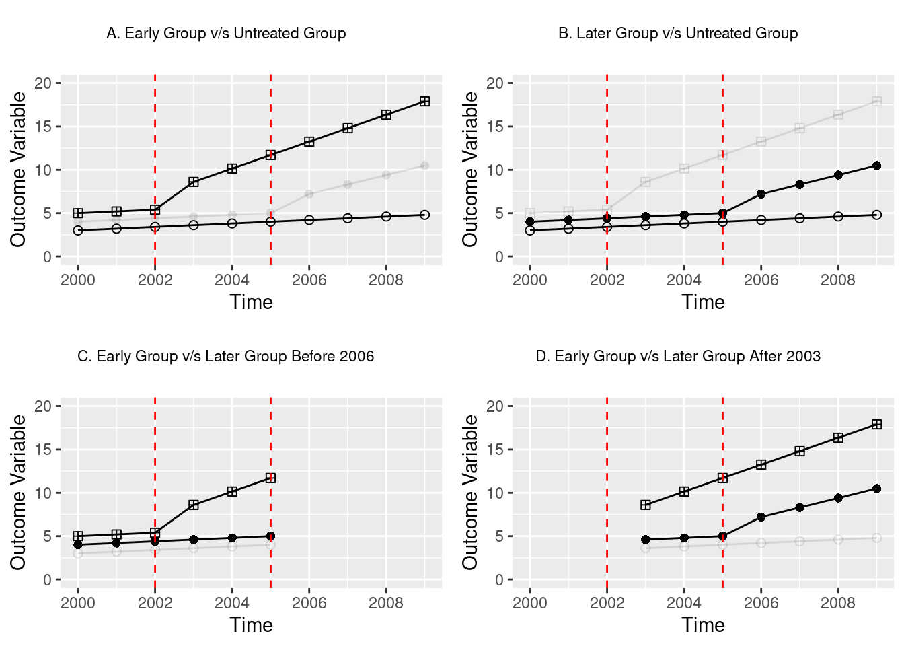
As seen in the plots, in the decomposition with trends these effects are no longer constants of 3 and 2 for early and later treated units given that the “treatment effect” is no longer simply \(1 \times unit\) in each case.
# 2X2 DD Regressions
A <- lm(y2 ~ post + factor(year) + factor(unit), data = Data, subset=(unit!=2))
B <- lm(y2 ~ post + factor(year) + factor(unit), data = Data, subset=(unit!=3))
C <- lm(y2 ~ post + factor(year) + factor(unit), data = Data, subset=(unit!=1 & year<2006))
D <- lm(y2 ~ post + factor(year) + factor(unit), data = Data, subset=(unit!=1 & year>2002))
# 2x2 Betas
bkUk <- A$coefficient["post"]
bkUl <- B$coefficient["post"]
bklk <- C$coefficient["post"]
bkll <- D$coefficient["post"]
bkll post
-1.375 # Share of time treated
Dk = mean(Data$post[Data$unit==3])
Dl = mean(Data$post[Data$unit==2])
# How much treatment varies
VkUk = 0.5*0.5*(Dk)*(1-Dk)
VkUl = 0.5*0.5*(Dl)*(1-Dl)
Vklk = 0.5*0.5*((Dk-Dl)/(1-Dl))*((1-Dk)/(1-Dl))
Vkll = 0.5*0.5*(Dl/Dk)*((Dk-Dl)/(Dk))
VD <- sum(lm(post ~ factor(unit) + factor(year), data = Data)$residuals^2/30)
# Share of sample
nk = 1/3
nl = 1/3
nu = 1/3
# Weights
wkUk = ((nk + nu)^2*VkUk)/VD
wkUl = ((nl + nu)^2*VkUl)/VD
wklk = (((nk + nl)*(1-Dl))^2*Vklk)/VD
wkll = (((nk + nl)*Dk)^2*Vkll)/VD
# Tau
tau = bkUk*wkUk + bkUl*wkUl + bklk*wklk + bkll*wkll
tau post
3.804545 What is noteworthy here is the surprising behaviour flagged by Goodman-Bacon (2021) for the final comparison based on the case where the earlier treated unit (unit 3) is used as a control for the later trated unit (unit 2). In this case, given that there are time-varying treatment effects, despite the fact that each unit-specific treatment effect is positive, we observe that the parameter \(\widehat{\beta}^{2 \times 2, l}_{kl}\) is actually negative. In this particular example this negative value (-1.375) is not sufficient to turn the weighted treatment effect estimate negative, but if you play around with the size of the parameters \(\beta_1\) and \(\beta_2\) above, you will see that large enough differences in trends can result in such estimates! Here, as above, we see that when we aggregate unit-specific estimates as tau, the estimate (by definition) agrees with the estimate generated by two-way fixed effect models previously.
Chaisemartin and D’Haultfœuille (2020)’s Procedure
Now, we will show that the procedures described in Chaisemartin and D’Haultfœuille (2020), despite arriving to the estimator in a different way, also let us understand how the regression weights the two-way fixed effect estimator. In this case, rather than considering each treatment-control comparison pair, the authors note that the two-way fixed estimator can be conceived as a weighted sum of each single group by time period in any post-treatment group.
The authors define \(\widehat{\beta}_{fe}\) as the coefficient estimated in the following (standard) two-way fixed effects regression: \[y_{i,s,t} = \beta_0 + \beta_{fe} D_{s,t} + \mu_s + \lambda_t + \varepsilon_{s,t}\] Where \(D_{s,t}\) is the mean over \(i\) of a binary indicator variable that takes value of 1 if the unit \(i\) in state \(s\) is treated at period \(t\) and 0 otherwise, in our case as we have one observartion per state \(D_{s,t} = post_{s,t}\), meanwhile \(\mu_s\) and \(\lambda_t\) are state and time fixed effects. This is, of course, precisely the same model as we have estimated in Equation 1, implying that \(\beta_{fe}=2.4545\) in cases without post-treatment trends (y1), or \(\beta_{fe}=3.8045\) in cases with post-treatment dynamics (y2).
Chaisemartin and D’Haultfœuille (2020) define the ATE for any (\(s,t\)) cell as: \[\Delta_{s,t} = \frac{1}{N_{s,t}} \sum_{i = 1}^{N_{s,t}}[Y_{i,s,t}(1) - Y_{i,s,t}(0)].\] You will note that here we require an unobserved counterfactual \(Y_{i,s,t}(0)\). If we impose a parallel trend assumption, such a counterfactual can be inferred from unit-specific fixed effects, time-specific fixed effects, and the constant term. Because in this case we know our data generating process, we can simply generate this counterfactual as the data generating process, absent any effect of treatment. Below we generate such a counterfactual, where you will note that we impose that this is an ‘untreated’ counterfactual by setting the treatment effects to 0 in the generation of y1_c below:
Data$y1_c <- 2 + (Data$year - 2000) * 0.2 + 1 * Data$unit + 0 * Data$post * Data$unit +
0 * Data$post * Data$unit * (Data$time)It is likely useful to confirm to ourselves that graphically we are indeed generating the untreated counterfactual in this way.
p1 <- ggplot(data = subset(Data, unit==2), aes(x = year)) +
geom_line(aes(y = y1), color = "blue", size = 1.5) +
geom_line(aes(y = y1_c), color = "red", linetype = "dashed", size = 1.5) +
labs(x = "Year", y = "Y") +
scale_x_continuous(breaks = seq(from = 2000, to = 2009, by = 2)) +
annotate(geom = "text", x = 2008, y = 5, label = "Y(0)") +
annotate(geom = "text", x = 2008, y = 7, label = "Y(1)")
t1 <- ggplot() + geom_text(aes(x = 0, y = 0, label = "(a) Unit 2 Outcome and Counterfactual")) +
theme_void()
p2 <- ggplot(data = subset(Data, unit==3), aes(x = year)) +
geom_line(aes(y = y1), color = "blue", size = 1.5) +
geom_line(aes(y = y1_c), color = "red", linetype = "dashed", size = 1.5) +
labs(x = "Year", y = "Y") +
scale_x_continuous(breaks = seq(from = 2000, to = 2009, by = 2)) +
annotate(geom = "text", x = 2008, y = 9, label = "Y(1)") +
annotate(geom = "text", x = 2008, y = 6, label = "Y(0)")
t2 <- ggplot() + geom_text(aes(x = 0, y = 0, label = "(b) Unit 3 Outcome and Counterfactual")) +
theme_void()
ggarrange(plotlist = list(p1, p2, t1, t2), ncol = 2, nrow = 2, heights = c(0.9, 0.1))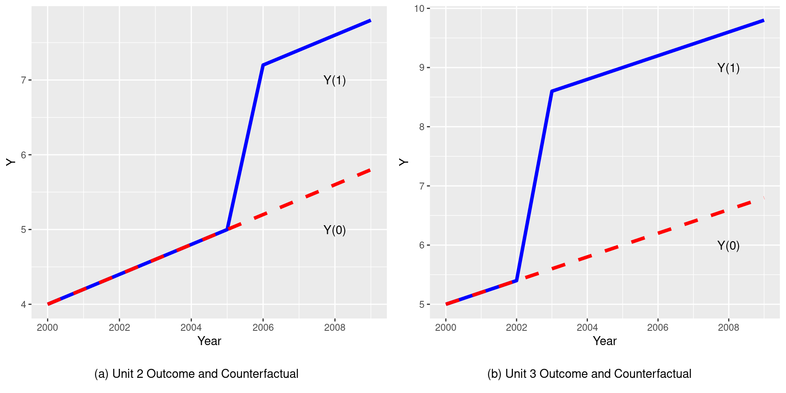
This allows us to calculate a state- and time-period specific treatment effect (\(\Delta_{s,t}\)) for each treated unit. We do so, calculating this quantity for all units in which treatment exists:
Data$Delta_st[Data$post == 1] = Data$y1[Data$post == 1] - Data$y1_c[Data$post == 1]
print(Data[Data$post==1, c("y1", "y1_c", "unit", "year", "Delta_st")]) y1 y1_c unit year Delta_st
17 7.2 5.2 2 2006 2
18 7.4 5.4 2 2007 2
19 7.6 5.6 2 2008 2
20 7.8 5.8 2 2009 2
24 8.6 5.6 3 2003 3
25 8.8 5.8 3 2004 3
26 9.0 6.0 3 2005 3
27 9.2 6.2 3 2006 3
28 9.4 6.4 3 2007 3
29 9.6 6.6 3 2008 3
30 9.8 6.8 3 2009 3Unsurprisingly, given the data generating process we have defined, we see that each treatment effect is 2 for unit 2, and 3 for unit 3. If we were to calculate a mean treatment effect by hand, we may wish to simply take an average over all periods and units. However, one of the key results of Chaisemartin and D’Haultfœuille (2020) is to show that under a series of standard assumptions \[\beta_{fe} = E \left[ \sum_{s,t:D_{s,t}=1}\frac{N_{s,t}}{N_1}w_{s,t}\Delta_{s,t} \right]\] Where \(N_1\) refers to the sum of all treated observations and \[w_{s,t} = \frac{\varepsilon_{s,t}}{\sum_{s,t:D_{s,t}=1}\frac{N_{s,t}}{N_1}\varepsilon_{s,t}}\] Where \(\varepsilon_{s,t}\) is the residual from a regression of \(D_{s,t}\) on state and time fixed-effects. To confirm this in our data, we will estimate these regression residuals and add them into the dataframe:
auxreg <- lm(post ~ factor(unit) + factor(year), data = Data)
Data$eps_st = auxreg$residuals
Data$eps_st[Data$post != 1] = NA
Data$w_st = Data$eps_st / sum(Data$eps_st, na.rm = T)
print(round(Data[Data$post==1, c("y1", "y1_c", "unit", "year", "Delta_st","w_st")],digits=15)) y1 y1_c unit year Delta_st w_st
17 7.2 5.2 2 2006 2 0.1363636
18 7.4 5.4 2 2007 2 0.1363636
19 7.6 5.6 2 2008 2 0.1363636
20 7.8 5.8 2 2009 2 0.1363636
24 8.6 5.6 3 2003 3 0.1515152
25 8.8 5.8 3 2004 3 0.1515152
26 9.0 6.0 3 2005 3 0.1515152
27 9.2 6.2 3 2006 3 0.0000000
28 9.4 6.4 3 2007 3 0.0000000
29 9.6 6.6 3 2008 3 0.0000000
30 9.8 6.8 3 2009 3 0.0000000Note here that after generating \(w_{s,t}\) we print this out using the round function to avoid very small digits appearing which are only different to zero given machine precision. The key thing that we can see is that the effective weighting of treatment effects which occurs in regression is quite different to what we would expect. Indeed, four periods are given 0 weights! Finally, we can confirm that this decomposition gives us the two-way fixed effect estimate by multiplying \(\Delta_{s,t}\) and \(w_{s,t}\) and summing:
print(paste0("de Chaisemartin and Xavier D'Haultfoeuille's decomposition ",
"returns an estimates of: ",
sum(Data$Delta_st*Data$w_st, na.rm = T)))[1] "de Chaisemartin and Xavier D'Haultfoeuille's decomposition returns an estimates of: 2.45454545454545"We can see that correctly, this decomposition also returns the two-way fixed effect estimate of 2.4545.
We can follow precisely the same series of steps to see the case of the decomposition where treatment exposition also results in a trend-break. To see this, we conduct each of the above steps below, however here we have not produced similar graphs (though you may wish to do so to confirm that counterfactuals make sense):
Data$y2_c <- 2 + (Data$year - 2000) * 0.2 + 1 * Data$unit + 0 * Data$post * Data$unit +
0 * Data$post * Data$unit * (Data$time)
Data$Delta_st2[Data$post == 1] = Data$y2[Data$post == 1] - Data$y2_c[Data$post == 1]
print(round(Data[Data$post==1, c("y2", "y2_c", "unit", "year", "Delta_st2","w_st")],digits=15)) y2 y2_c unit year Delta_st2 w_st
17 7.20 5.2 2 2006 2.00 0.1363636
18 8.30 5.4 2 2007 2.90 0.1363636
19 9.40 5.6 2 2008 3.80 0.1363636
20 10.50 5.8 2 2009 4.70 0.1363636
24 8.60 5.6 3 2003 3.00 0.1515152
25 10.15 5.8 3 2004 4.35 0.1515152
26 11.70 6.0 3 2005 5.70 0.1515152
27 13.25 6.2 3 2006 7.05 0.0000000
28 14.80 6.4 3 2007 8.40 0.0000000
29 16.35 6.6 3 2008 9.75 0.0000000
30 17.90 6.8 3 2009 11.10 0.0000000Because there is no difference in the structure of the treatment indicator or the unit and time fixed effects, the residuals \(w_{s,t}\) are identical, though of course the treatment effects themselves, \(\Delta_{s,t}\) are not. Thus, once again we see that later treatment effects for unit 3 (precisely those units for which treatment effects are largest), are given zero weights. Finally, again we can calculate the two-way fixed effect estimate following this decomposition by summing across units, capturing the estimate we have previously observed in regression models of 3.804545.
print(paste0("de Chaisemartin and Xavier D'Haultfoeuille's decomposition ",
"returns an estimates of: ",
sum(Data$Delta_st2*Data$w_st, na.rm = T)))[1] "de Chaisemartin and Xavier D'Haultfoeuille's decomposition returns an estimates of: 3.80454545454545"Depending on the nature of treatment assignment, ie the number of treated periods, as well as the period in which treatment is adopted in different units, these weights will vary, and can even be negative. You may wish to explore alternative set-ups and confirm to yourself that this is the case, and see that regardless of the nature of the setting, both Goodman-Bacon (2021) and Chaisemartin and D’Haultfœuille (2020)’s decompositions recover the two-way fixed effect estimate.
Code call-out 4.3: Event study and Interaction-weighted Estimators
To understand the equivalence between the panel event study model described in Section 4.4.2.1 of the book and the “Interaction-weighted (IW) estimator” proposed by Sun and Abraham (2021) we work with data from Stevenson and Wolfers (2006) which examines the effect of the staggered adoption of no-default divorce reforms (X_nfd) and female suicide (asmrs) in United States for 49 states (stfips) from 1964 to 1996. We begin by loading the data below, and confirming that it effectively consists of a balanced sample of 49 states (we will denote using \(s\) below) over 33 years (denoted as \(t\)):
data <- read.csv(file = "data/Stevenson_Wolfers_2006.csv")
nrow(data)[1] 1617head(data) stfips year X_nfd post asmrs pcinc asmrh cases weight copop
1 1 1964 1971 0 35.63988 12406.18 5.007341 0.01231224 1715156 1715156
2 1 1965 1971 0 41.54375 13070.21 4.425367 0.01041941 1715156 1725186
3 1 1966 1971 0 34.25233 13526.66 4.874819 0.00990010 1715156 1735219
4 1 1967 1971 0 34.46502 13918.19 5.362014 0.00997469 1715156 1745250
5 1 1968 1971 0 40.44011 14684.81 4.643759 0.01240066 1715156 1755283
6 1 1969 1971 0 42.49012 15638.88 5.296976 0.01500676 1715156 1765316In order to prepare our dataset we note that the variable X_nfd contains the year a state adopts a law (\(Event_s\)), and define a variable timeToTreat as the difference between year \(t\) and \(Event_s\):
data$timeToTreat <- data$year - data$X_nfd
head(data[, c('year', 'X_nfd', 'timeToTreat')], 10) year X_nfd timeToTreat
1 1964 1971 -7
2 1965 1971 -6
3 1966 1971 -5
4 1967 1971 -4
5 1968 1971 -3
6 1969 1971 -2
7 1970 1971 -1
8 1971 1971 0
9 1972 1971 1
10 1973 1971 2Because `X_nfd’ is missing for states which did not pass a no fault divorce law in the period under study, this variable thus captures leads (periods prior to treatment) and lags (periods post treatment) for states which have adopted a no fault divorce law.
Panel Event Study Model
We will begin by estimating a standard event study, defined as follows, or as equation XXXX in the book: \[asmrs_{st} = \alpha + \sum_{j=2}^{J} \beta_j (Lead \ j)_{st} + \sum_{k = 0}^{K} \gamma_{k} (Lag \ k)_{st} + \mu_s + \lambda_t + X_{st}^\prime \Gamma + \varepsilon_{st}\] Here \(asmrs_{st}\) refers to the female suicide rate for all women of state \(s\) at period \(t\), \((Lead \ j)_{st}\) a dummy variable that takes 1 if the state \(s\) at period \(t\) is \(j\) periods pre-treatment, \((Lag \ k)_{st}\) a dummy variable that takes 1 if the state \(s\) at period \(t\) is \(k\) periods post-treatment, \(\mu_s\) and \(\lambda_t\) are state and time fixed effects respectively and \(X^\prime_{st}\) a vector of covariates for state \(s\) at period \(t\) such as per-capita income \(pcinc_{st}\), homicide mortality \(asmrh_{st}\) and the aid to families with dependent children (AFDC) rate for a family of four \(cases_{st}\).
Thus, we wish to include a single binary variable for each lead and lag observed in our data (arbritarily omitting lead 1). If we inspect the values of timeToTreat below, we can see how there are \(J = 21\) binary \(Lead\) variables and \(K = 27\) \(Lag\) variable to include:
unique(data$timeToTreat) [1] -7 -6 -5 -4 -3 -2 -1 0 1 2 3 4 5 6 7 8 9 10 11
[20] 12 13 14 15 16 17 18 19 20 21 22 23 24 25 -9 -8 NA 26 -13
[39] -12 -11 -10 -20 -19 -18 -17 -16 -15 -14 27 -21A natural option to generate lags and leads may seem to be to convert the numeric variable timeToTreat into a factor variable and use C() in the lm function when estimating OLS to automatically create all required binary variables. However, an issue will arise in this case given the missing (NA) values in timeToTreat from those states that never receive treatment, as this missingness would be inherited by the regression model. One possible solution is to manually create all the binary variables as below, looping through each level of timeToTreat. The resulting set of lags and leads will take a value of 1 if timeToTreat is equal to the period of interest, and 0 otherwise. While we could likely do this in fewer lines, it is useful to see explicitly how lags and leads are coded.
for (i in sort(unique(data$timeToTreat))) {
if(is.na(i)){
next
} else if(i < 0){
data[, paste0('Lead', abs(i))] <- ifelse((!is.na(data$timeToTreat)) &
(data$timeToTreat == i), 1, 0)
} else{
data[, paste0('Lag', i)] <- ifelse((!is.na(data$timeToTreat)) &
(data$timeToTreat == i), 1, 0)
}
}Next we can estimate the event study by standard OLS using the felm function from the lfe package. Note that we omit Lead1 as a reference base level. The usage of this function includes a four-part formula where the first part is a conventional formula as in lm, the second part is our variables that determine the fixed effects (in this case year and state fixed effects), the third part is for an IV formula and the last part is a variable to use if clustered standard errors are desired. As we are not estimating with IV we indicate 0 in the IV portion of the formula. Here we cluster standard errors by state, and in this example we indicate cmethod = "reghdfe", which ensures that identical degree of freedom corrections are used as in Stata’s reghdfe package’s cluster-robust standard errors. In this particular case, standard errors will be identical if such an option is not indicated, as no fixed effects are multicolinear.
library(lfe)
EventStudy <- felm(data = data,
formula = asmrs ~ Lead21 + Lead20 + Lead19 + Lead18 + Lead17 +
Lead16 + Lead15 + Lead14 + Lead13 + Lead12 + Lead11 + Lead10 +
Lead9 + Lead8 + Lead7 + Lead6 + Lead5 + Lead4 + Lead3 + Lead2 +
Lag0 + Lag1 + Lag2 + Lag3 + Lag4 + Lag5 + Lag6 + Lag7 +
Lag8 + Lag9 + Lag10 + Lag11 + Lag12 + Lag13 + Lag14 + Lag15 +
Lag16 + Lag17 + Lag18 + Lag19 + Lag20 + Lag21 + Lag22 + Lag23 +
Lag24 + Lag25 + Lag26 + Lag27 + pcinc + asmrh + cases |
year + stfips | 0 |stfips, cmethod = "reghdfe")
summary(EventStudy)
Call:
felm(formula = asmrs ~ Lead21 + Lead20 + Lead19 + Lead18 + Lead17 + Lead16 + Lead15 + Lead14 + Lead13 + Lead12 + Lead11 + Lead10 + Lead9 + Lead8 + Lead7 + Lead6 + Lead5 + Lead4 + Lead3 + Lead2 + Lag0 + Lag1 + Lag2 + Lag3 + Lag4 + Lag5 + Lag6 + Lag7 + Lag8 + Lag9 + Lag10 + Lag11 + Lag12 + Lag13 + Lag14 + Lag15 + Lag16 + Lag17 + Lag18 + Lag19 + Lag20 + Lag21 + Lag22 + Lag23 + Lag24 + Lag25 + Lag26 + Lag27 + pcinc + asmrh + cases | year + stfips | 0 | stfips, data = data, cmethod = "reghdfe")
Residuals:
Min 1Q Median 3Q Max
-41.638 -5.777 -0.025 5.441 60.536
Coefficients:
Estimate Cluster s.e. t value Pr(>|t|)
Lead21 -2.292e+01 3.970e+00 -5.774 5.55e-07 ***
Lead20 -1.208e+01 1.088e+01 -1.110 0.27239
Lead19 8.843e+00 5.897e+00 1.500 0.14026
Lead18 -5.160e-01 4.631e+00 -0.111 0.91175
Lead17 -4.435e+00 6.147e+00 -0.721 0.47413
Lead16 -1.023e+00 3.557e+00 -0.288 0.77496
Lead15 8.478e-01 4.152e+00 0.204 0.83909
Lead14 4.328e+00 5.164e+00 0.838 0.40616
Lead13 -1.389e+00 4.587e+00 -0.303 0.76341
Lead12 -4.345e-02 6.842e+00 -0.006 0.99496
Lead11 -9.382e+00 3.939e+00 -2.382 0.02125 *
Lead10 -1.151e+00 4.881e+00 -0.236 0.81465
Lead9 -5.001e+00 3.551e+00 -1.408 0.16551
Lead8 -2.738e+00 3.863e+00 -0.709 0.48193
Lead7 -1.256e+00 4.296e+00 -0.292 0.77118
Lead6 -7.506e-01 2.960e+00 -0.254 0.80092
Lead5 -2.775e+00 2.594e+00 -1.070 0.28996
Lead4 2.284e-01 2.373e+00 0.096 0.92373
Lead3 -2.313e+00 2.940e+00 -0.787 0.43532
Lead2 -5.157e-01 2.489e+00 -0.207 0.83673
Lag0 2.507e-01 2.694e+00 0.093 0.92624
Lag1 -1.619e+00 2.911e+00 -0.556 0.58064
Lag2 -1.687e+00 3.858e+00 -0.437 0.66386
Lag3 -7.445e-01 2.833e+00 -0.263 0.79385
Lag4 -2.956e+00 2.804e+00 -1.055 0.29693
Lag5 -2.378e+00 2.726e+00 -0.872 0.38747
Lag6 -3.312e+00 3.531e+00 -0.938 0.35303
Lag7 -5.137e+00 3.367e+00 -1.526 0.13368
Lag8 -6.991e+00 3.055e+00 -2.289 0.02654 *
Lag9 -4.823e+00 3.058e+00 -1.577 0.12128
Lag10 -8.814e+00 3.637e+00 -2.424 0.01919 *
Lag11 -7.273e+00 3.594e+00 -2.023 0.04861 *
Lag12 -6.152e+00 4.047e+00 -1.520 0.13511
Lag13 -8.277e+00 3.906e+00 -2.119 0.03928 *
Lag14 -6.593e+00 3.828e+00 -1.723 0.09140 .
Lag15 -7.851e+00 4.029e+00 -1.949 0.05720 .
Lag16 -7.234e+00 4.227e+00 -1.712 0.09344 .
Lag17 -8.517e+00 4.300e+00 -1.981 0.05335 .
Lag18 -9.992e+00 3.720e+00 -2.686 0.00991 **
Lag19 -1.154e+01 3.822e+00 -3.018 0.00406 **
Lag20 -9.219e+00 4.456e+00 -2.069 0.04394 *
Lag21 -1.079e+01 4.372e+00 -2.468 0.01721 *
Lag22 -1.065e+01 4.561e+00 -2.336 0.02371 *
Lag23 -1.209e+01 5.238e+00 -2.308 0.02538 *
Lag24 -1.068e+01 6.084e+00 -1.755 0.08564 .
Lag25 -1.027e+01 7.382e+00 -1.391 0.17069
Lag26 -1.669e+01 1.043e+01 -1.600 0.11620
Lag27 -4.345e-01 8.063e+00 -0.054 0.95725
pcinc -1.105e-03 4.029e-04 -2.742 0.00857 **
asmrh 1.081e+00 5.908e-01 1.829 0.07358 .
cases -1.904e+02 1.331e+02 -1.430 0.15916
---
Signif. codes: 0 '***' 0.001 '**' 0.01 '*' 0.05 '.' 0.1 ' ' 1
Residual standard error: 10.81 on 1485 degrees of freedom
Multiple R-squared(full model): 0.7212 Adjusted R-squared: 0.6966
Multiple R-squared(proj model): 0.07312 Adjusted R-squared: -0.008647
F-statistic(full model, *iid*):29.32 on 131 and 1485 DF, p-value: < 2.2e-16
F-statistic(proj model): 888.6 on 51 and 48 DF, p-value: < 2.2e-16 Once we have estimated this regression, we can visualise point estimates and standard errors in the traditional event study style, as laid out below. To do this, we will “pre-populate” a data frame with all NA values, and then incorporate the parameters we need from our regression, which we saved as EventStudy above. Finally, we will plot an event study using ggplot2, combinging geom_point for point estimates, and geom_errorbar for confidence intervals:
params <- summary(EventStudy)$coefficients
# Create df
plot_df <- data.frame(Time = -21:27, Estimate = NA, SE = NA)
# Assign values
plot_df[plot_df$Time < -1, c('Estimate', 'SE')] <- params[1:20, c('Estimate',
'Cluster s.e.')]
plot_df[plot_df$Time > -1, c('Estimate', 'SE')] <- params[21:48, c('Estimate',
'Cluster s.e.')]
plot_df[plot_df$Time == -1, c('Estimate', 'SE')] <- 0
# Graph
library(ggplot2)
ggplot(data = plot_df) + geom_point(aes(x = Time, y = Estimate)) +
geom_errorbar(aes(ymin = Estimate - 1.96 * SE, ymax = Estimate + 1.96 * SE,
x = Time)) +
geom_hline(yintercept = 0, color = 'red') + geom_vline(xintercept = -1) +
scale_x_continuous(limits = c(-21, 27), breaks = seq(-20, 25, 5)) +
scale_y_continuous(limits = c(-40, 40), breaks = seq(-40, 40, 20)) +
labs(x = 'Time To Treatment', y = 'Suicide per 1m Woman')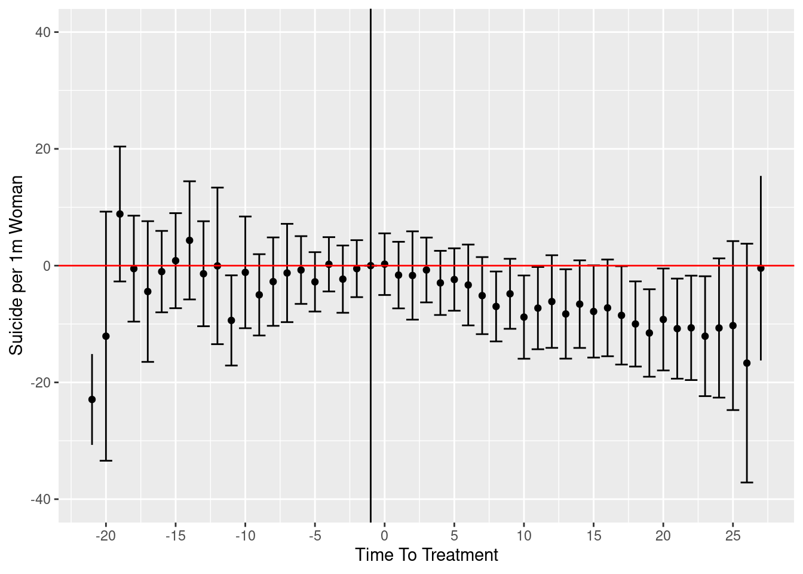
In the figure we see, in general, relatively flat trends in the lead up to the event of interest, and thereafter a reduction in rates of female suicide following the passage of no fault divorce laws.
Interaction-weighted Estimator
To see how the interaction-weighted estimator proposed by Sun and Abraham (2021) accounts for time-varying treatment adoption, we will generate it “by hand” here. This estimator proposes to generate \(\widehat{v}_g\) for some period \(g\) of interest, where in this case \(g\) will refer to each lag and lead. Formally, \(\widehat{v}_g\) is defined as follows: \[ \widehat{v}_g = \frac{1}{|g|} \sum_{\ell \in g} \sum_{e} \widehat{\delta}_{e,\ell} \widehat{Pr} \left\{ E_i = e | E_i \in [-\ell , T - \ell] \right\}. \tag{2}\] Here \(E_i\) indicates the moment treatment is adopted for a unit \(i\), and \(\ell\) is the relative period to treatment at period \(t\), ie \(\ell = t - E_i\). Thus, \(\widehat{Pr} \left\{ E_i = e | E_i \in [-\ell , T - \ell] \right\}\) is the sample share of the cohort that receives the initial treatment at a time \(e\), \(g\) is a set of relative periods \(\ell \in [-T , T]\), and \(\widehat{\delta}_{e, \ell}\) is an estimate of the Cohort-specific Average Treatment effect on the Treated (\(CATT\)) for the cohort \(e\) at \(\ell\) periods from initial treatment \[\delta_{e,\ell} = CATT_{e, \ell} = E[Y_{i,e+\ell} - Y_{i,e+\ell}^{\infty} | E_i = e]\] Where \(Y_{i,t}\) is the outcome for unit \(i\) at time \(t\) and \(Y_{i,t}^{\infty}\) is the potential outcome for unit \(i\) at time \(t\) if never were treated. Sun and Abraham (2021) describe the estimation procedure of \(\widehat{v}_g\) as follows:
- Estimate \(CATT_{e,\ell}\) from a TWFE interacting relative periods indicators with cohort indicators, excluding indicators for cohorts from some set \(C\)1: \[Y_{i,t} = \alpha_i + \lambda_t + \sum_{e\neq C} \sum_{\ell \neq -1} \delta_{e, \ell} (\mathbf{1}\{ E_i = e\} \cdot D_{i,t}^{\ell}) + \varepsilon_{i,t}\] Where \(\alpha_i\) and \(\lambda_t\) are the unit and time fixed effects, \(\mathbf{1}\{E_i=e\}\) the cohort indicators and \(D_{i,t}^{\ell}\) the relative period indicators, i.e, \(D_{i,t}^{\ell} = 1\) if unit \(i\) at time \(t\) is \(\ell\) periods from the treatment.
- Estimates the weights for each \(\widehat{\delta}_{e,\ell}\): \(\widehat{Pr} \left\{ E_i = e | E_i \in [-\ell , T - \ell] \right\}\) as the sample share of the cohort that receives the initial treatment at a time \(e\) that has experienced the \(\ell\) relative period to treatment.
- Estimate the IW estimator following equation (Equation 2).
To fix ideas and get a hold on notation, in our example \(g = \{-21 , -20 , \cdots , 27\}\), as we are considering the full set of lags and leads \(\ell\) as part of \(g\). The years which a no fault divorce law was passed (\(e\)) are \(e \in \{1969 , 1970 , 1971 , 1972 , 1973 , 1974 , 1975 , 1976 , 1977 , 1980 , 1984 , 1985\}\)2. We will start by building a series of indicator variables for \(E_i\) as follows:
for (i in sort(unique(data$X_nfd))) {
data[, paste0('E_', i)] <- ifelse((!is.na(data$X_nfd))&(data$X_nfd == i), 1, 0)
}You may wish to confirm each E_1969 generated in this loop above contains a vector of 1s for all units which were first exposed to the policy in 1969, and so forth for other indicators.
If we return to (Equation 2), we can see that we are interested in estimating a full set of lags and leads for each adoption period \(e\). With this particular setup, we have 12 indicator variables drawn from \(e\), and if we consider all lags and leads in \(g\), we have 48 indicator variables3. Thus, from \(\displaystyle\sum_{e\neq C}\sum_{\ell\neq-1}\delta_{e, \ell} (\mathbf{1}\{ E_i = e\} \cdot D_{i,t}^{\ell})\) we have 576 indicator variables! To ilustrate this we build three matrix: (i) Dummies for \(g = \{-21 , -20 , \cdots , 27\}\), (ii) dummies for \(e \in \{1969 , 1970 , 1971 , 1972 , 1973 , 1974 , 1975 , 1976 , 1977 , 1980 , 1984 , 1985\}\) and (iii) dummies for \(CATT_{e,\ell}\). At the end, we will also rename the column names of the last matrix in order to make it clearer when we go forward where we will store each of the outputs of interest.
library(dplyr)
# Create matrices for timeToTreat and Cohort dummies
dummies_timeToTreat <- select(data, contains(c("Lead", "Lag")), -Lead1) %>% as.matrix()
dummies_Cohort <- select(data, contains("E_")) %>% as.matrix()
# Initialize dummies_CATT with the first cohort's interaction
dummies_CATT <- dummies_timeToTreat * dummies_Cohort[, 1]
# Loop through the rest of the cohorts and cbind the interaction results
for(i in 2:ncol(dummies_Cohort)) {
dummies_CATT <- cbind(dummies_CATT, dummies_timeToTreat * dummies_Cohort[, i])
}
# Update column names of dummies_CATT
unique_groups <- sort(unique(data$X_nfd))
group_size <- ncol(dummies_timeToTreat)
for(aux in seq_along(unique_groups)) {
g <- unique_groups[aux]
col_indices <- (group_size * (aux - 1) + 1):(group_size * aux)
colnames(dummies_CATT)[col_indices] <- paste0("E", g, "_", colnames(dummies_timeToTreat))
}The matrix dummies_timeToTreat will consist of an indicator for each observation capturing whether it is at a particular time to treatment adoption. Similarly, dummies_Cohort will consists of an indicator for whether or not an observation is part of each group \(e\). The interaction between these two matrices (dummies_CATT) will thus build an indicator for each cohort and time to treatment, indicating whether an observation is in this particular group. Note, however, that some of the indicator variables in dummies_CATT will actually be entirely empty. This is because there are some cohorts that never experience some specific \(\ell\) relative to the period of treatment (eg early treatment adopters won’t have enough data prior to treatment to observe very long leads, and late treatment adopters won’t have enough post-treatment data to observe very long lags). In order to delete these indicators which exist in our matrix dummies_CATT but not in practice, we can simply remove from the matrix dummies_CATT those columns with 0 mean:
dummies_CATT <- dummies_CATT[,colMeans(dummies_CATT) != 0]
ncol(dummies_CATT)[1] 384As we see here, we have now reduced the dimensionality of the indicator variables \(\displaystyle\sum_{e\neq C}\sum_{\ell\neq-1}\delta_{e, \ell} (\mathbf{1}\{ E_i = e\} \cdot D_{i,t}^{\ell})\) from 576 to 384, which are the full observable lags and leads for each treatment cohort. Now we can actually go about the business of estimating \(\delta_{e,\ell}\)!
CATT_el = felm(data = data, formula = asmrs ~ dummies_CATT + pcinc + asmrh +
cases | year + stfips | 0 |
stfips, cmethod = "reghdfe")This looks quite simple, and it is precisely because we have gone to all the work of generating all the dummies we need for our CATT groups. This, in essence, estimates an event study equivalent for each treatment adoption cohort. As there is many estimates here, we don’t show the full summary, but we can peruse the first 10 estimates for \(CATT_{e,\ell}\):
CATT_el$coefficients[1:10,]dummies_CATTE1969_Lead5 dummies_CATTE1969_Lead4 dummies_CATTE1969_Lead3
-5.93218731 -13.69226371 -8.62639305
dummies_CATTE1969_Lead2 dummies_CATTE1969_Lag0 dummies_CATTE1969_Lag1
0.04295749 3.41175479 -6.05233128
dummies_CATTE1969_Lag2 dummies_CATTE1969_Lag3 dummies_CATTE1969_Lag4
-10.11750342 2.49074774 1.52780269
dummies_CATTE1969_Lag5
1.90737085 To have a full idea of what we’ve just estimated here, we will re-organise these estimates to present the coefficient in the style of Table 3 of Sun and Abraham (2021). In particular, let’s display \(\ell\) values (lags and leads) in rows and \(e\) values in columns so we can observe our cohort-specific event studies in a column-wise fashion. We do this below, we first build a matrix deltas in which to store these estimates, then fill them in, before finally displaying the tabular output. Most of this code is actually relatively auxiliary, used to ensure that we can extract each lag and lead from regression results. To do this, we are generating a function we call fetch_coefficient, as the coefficient we need may sometimes be named with _Lag in the variable, sometimes be named as _Lead, and sometimes not exist (and this may imply either that it is the base period -1, or that the lag or lead doesn’t exist). It is worth working through this function carefully to confirm that you can see that in this way we grab each coefficient \(\widehat\delta_{e,\ell}\).
# Matrix to store delta_{e,l}
deltas <- matrix(data = NA, nrow = ncol(dummies_timeToTreat) + 1,
ncol = ncol(dummies_Cohort))
# Row and column names
rownames(deltas) <- c(paste0("Lead", 21:1), paste0("Lag", 0:27))
colnames(deltas) <- paste0("E", sort(unique(data$X_nfd)))
# Function to fetch coefficient safely
fetch_coefficient <- function(e, l) {
if (l == -1) {
return(0)
} else if (l < -1) {
Catt_searched <- paste0("dummies_CATTE", e, "_Lead", abs(l))
} else {
Catt_searched <- paste0("dummies_CATTE", e, "_Lag", l)
}
value <- tryCatch(
CATT_el$coefficients[Catt_searched, 1],
error = function(e) NA
)
return(value)
}
# Get unique cohorts and relative times
cohorts <- sort(unique(data$X_nfd))
relative_times <- -21:27
# Fill the deltas matrix
for (column in seq_along(cohorts)) {
e <- cohorts[column]
deltas[, column] <- sapply(relative_times, fetch_coefficient, e = e)
}
# Display the coefficients in a nice tabular output
library(kableExtra)
kbl(deltas, booktabs = T, digits = 2, linesep = "") %>%
kable_styling(font_size = 10, bootstrap_options = c("striped", "hover"), full_width = T)| E1969 | E1970 | E1971 | E1972 | E1973 | E1974 | E1975 | E1976 | E1977 | E1980 | E1984 | E1985 | |
|---|---|---|---|---|---|---|---|---|---|---|---|---|
| Lead21 | NA | NA | NA | NA | NA | NA | NA | NA | NA | NA | NA | -15.18 |
| Lead20 | NA | NA | NA | NA | NA | NA | NA | NA | NA | NA | 2.40 | -21.90 |
| Lead19 | NA | NA | NA | NA | NA | NA | NA | NA | NA | NA | -0.98 | 18.92 |
| Lead18 | NA | NA | NA | NA | NA | NA | NA | NA | NA | NA | -0.38 | 2.99 |
| Lead17 | NA | NA | NA | NA | NA | NA | NA | NA | NA | NA | 2.43 | -5.22 |
| Lead16 | NA | NA | NA | NA | NA | NA | NA | NA | NA | 7.15 | -3.07 | 4.48 |
| Lead15 | NA | NA | NA | NA | NA | NA | NA | NA | NA | -2.28 | -0.10 | 14.39 |
| Lead14 | NA | NA | NA | NA | NA | NA | NA | NA | NA | -1.21 | 3.65 | 19.09 |
| Lead13 | NA | NA | NA | NA | NA | NA | NA | NA | -6.34 | 4.23 | -9.14 | 24.03 |
| Lead12 | NA | NA | NA | NA | NA | NA | NA | 10.64 | -1.53 | 6.06 | 0.11 | -14.15 |
| Lead11 | NA | NA | NA | NA | NA | NA | -5.53 | -8.81 | -14.37 | -0.59 | -9.58 | 0.44 |
| Lead10 | NA | NA | NA | NA | NA | 5.40 | 10.96 | -5.35 | 2.62 | 10.58 | -13.16 | -8.54 |
| Lead9 | NA | NA | NA | NA | 0.99 | -2.29 | 4.00 | -7.25 | -13.54 | -0.63 | -17.07 | -3.73 |
| Lead8 | NA | NA | NA | -0.96 | -2.63 | 3.05 | 6.84 | -5.56 | -2.65 | 8.39 | -9.25 | -13.60 |
| Lead7 | NA | NA | -0.57 | -2.40 | -3.89 | 4.85 | 13.32 | -14.16 | 4.15 | -5.84 | -6.52 | 1.02 |
| Lead6 | NA | -6.64 | -7.40 | -0.09 | 2.52 | -0.72 | 7.80 | -1.78 | 1.58 | 0.47 | -7.73 | -10.91 |
| Lead5 | -5.93 | -8.94 | -12.21 | 0.88 | -1.92 | 3.10 | 2.51 | -3.12 | 8.49 | -5.37 | -12.77 | -3.14 |
| Lead4 | -13.69 | -4.03 | -3.62 | 6.89 | 2.29 | 10.26 | 6.19 | 6.50 | -1.39 | 2.67 | -17.53 | -15.56 |
| Lead3 | -8.63 | -0.64 | -1.40 | -1.38 | 1.72 | 0.41 | -6.37 | -30.71 | -2.29 | 1.26 | -11.90 | 6.51 |
| Lead2 | 0.04 | -7.73 | -2.33 | -0.60 | 0.57 | 10.95 | -3.71 | 15.42 | -13.64 | -0.89 | -0.51 | -1.28 |
| Lead1 | 0.00 | 0.00 | 0.00 | 0.00 | 0.00 | 0.00 | 0.00 | 0.00 | 0.00 | 0.00 | 0.00 | 0.00 |
| Lag0 | 3.41 | 2.40 | -9.30 | -2.28 | -0.05 | 2.15 | -3.45 | 15.08 | 3.15 | -7.45 | -0.09 | -0.30 |
| Lag1 | -6.05 | -1.51 | -10.40 | -7.87 | 1.85 | 1.35 | 2.48 | 37.58 | -11.87 | -8.25 | 2.79 | 1.45 |
| Lag2 | -10.12 | 1.42 | -14.03 | -2.83 | -0.85 | -1.03 | -4.76 | 10.07 | -7.82 | 2.69 | -3.31 | 14.23 |
| Lag3 | 2.49 | -17.17 | 3.31 | -8.72 | -0.02 | -0.76 | -5.80 | 2.31 | -9.26 | 6.52 | -7.19 | -14.86 |
| Lag4 | 1.53 | -14.84 | -8.79 | -4.13 | -3.26 | -0.33 | -10.89 | -1.72 | -13.48 | 2.01 | -4.96 | 8.86 |
| Lag5 | 1.91 | -19.50 | -7.70 | 0.48 | -6.12 | 1.38 | -7.21 | -6.58 | -7.58 | 4.56 | -6.41 | 18.85 |
| Lag6 | -0.37 | -22.58 | -7.61 | -11.47 | -7.94 | -4.09 | -5.97 | 6.39 | 7.57 | -3.08 | -4.35 | 2.54 |
| Lag7 | -8.18 | -23.92 | -13.68 | -7.09 | -13.03 | -2.53 | 2.97 | -0.19 | -2.74 | -3.55 | -5.42 | 18.37 |
| Lag8 | -5.32 | -28.52 | -17.16 | -12.78 | -8.96 | 6.14 | -5.90 | -5.51 | -14.37 | -5.09 | -2.47 | 13.54 |
| Lag9 | -7.27 | -32.22 | -19.23 | -3.70 | -2.19 | 4.50 | 12.50 | 4.79 | -9.11 | -0.74 | -6.88 | 9.48 |
| Lag10 | -8.42 | -42.27 | -18.60 | 1.01 | -3.38 | 0.81 | -5.57 | -10.01 | -20.61 | 0.19 | -11.25 | 7.04 |
| Lag11 | -10.35 | -37.49 | -7.21 | -0.01 | -9.55 | 4.01 | 2.04 | 0.74 | -20.97 | -0.85 | -9.80 | 19.13 |
| Lag12 | -5.86 | -31.43 | -8.21 | -4.18 | -6.88 | 6.89 | 5.34 | -11.04 | -8.16 | 1.39 | -6.41 | NA |
| Lag13 | 3.69 | -31.16 | -9.03 | -7.51 | -8.30 | -1.75 | -7.32 | 1.55 | -13.57 | -0.28 | NA | NA |
| Lag14 | 9.44 | -31.37 | -9.21 | 3.87 | -7.99 | -0.39 | 0.86 | -4.18 | -21.47 | -7.55 | NA | NA |
| Lag15 | -2.29 | -32.02 | -10.07 | -8.48 | -9.63 | 2.00 | 14.96 | -11.36 | -21.08 | -1.62 | NA | NA |
| Lag16 | 4.09 | -32.36 | -9.46 | -6.83 | -8.79 | 2.02 | 8.38 | -13.62 | -15.99 | -1.49 | NA | NA |
| Lag17 | -2.23 | -33.77 | -10.77 | -5.80 | -8.96 | -4.79 | 6.64 | -18.58 | -10.17 | NA | NA | NA |
| Lag18 | -2.80 | -40.06 | -14.50 | -1.15 | -11.05 | 0.19 | 7.08 | -7.23 | -23.61 | NA | NA | NA |
| Lag19 | -6.02 | -43.44 | -11.23 | -6.93 | -11.85 | -2.42 | -3.70 | -7.96 | -15.26 | NA | NA | NA |
| Lag20 | -2.54 | -40.00 | -11.16 | -0.39 | -8.97 | -6.09 | 3.67 | -9.08 | NA | NA | NA | NA |
| Lag21 | -3.01 | -44.81 | -10.95 | -10.47 | -8.09 | -6.82 | -3.47 | NA | NA | NA | NA | NA |
| Lag22 | -9.43 | -41.26 | -4.40 | -10.71 | -12.54 | -6.65 | NA | NA | NA | NA | NA | NA |
| Lag23 | 1.64 | -41.75 | -10.56 | -12.20 | -13.46 | NA | NA | NA | NA | NA | NA | NA |
| Lag24 | 3.72 | -48.42 | -12.07 | -7.85 | NA | NA | NA | NA | NA | NA | NA | NA |
| Lag25 | -4.08 | -47.32 | -8.76 | NA | NA | NA | NA | NA | NA | NA | NA | NA |
| Lag26 | -5.18 | -44.65 | NA | NA | NA | NA | NA | NA | NA | NA | NA | NA |
| Lag27 | 3.75 | NA | NA | NA | NA | NA | NA | NA | NA | NA | NA | NA |
Now, with \(\widehat\delta_{e,\ell}\) in hand, the only other thing we need are the weights of each cohort at the respective relative period. We could do this “by hand”, calculating from observations in our data, but it is likely easier to get these by regressing each cohort indicator variable \(\mathbf{1} \{ E_i = e \}\) on all the relative period indicator variables \(D^\ell_{i,t}\). This regression will just tell us the proportion of a specific lead or lag which are made up of observations from a particular cohort. We will do this below, storing weights in a matrix called w1:
# Matrix to store results
w1 <- matrix(data = NA, ncol = ncol(dummies_Cohort),
nrow = ncol(dummies_timeToTreat)+1)
# Row and column names
rownames(w1) <- c(paste0("Lead", 21:1), paste0("Lag", 0:27))
colnames(w1) <- paste0("E", sort(unique(data$X_nfd)))
# Auxiliary column indicator
column <- 0
# For each cohort
for (e in sort(unique(data$X_nfd))) {
# Add 1 to column indicator
column = column + 1
# Regress the cohort in indicated column on relative period dummies
aux_model <- lm(dummies_Cohort[,column] ~ dummies_timeToTreat - 1)
# Assign the estimated coefficients that are the weights
w1[,column] <- c(aux_model$coefficients[1:20], 0, aux_model$coefficients[21:48])
# Note those with 0 value really are relative periods for which the cohort doesn't
# exist, so can be assignad as missing in order to follow Sun and Abraham Table 3
w1[w1[,column] == 0,column] <- NA
}
# Now row 21 is the base period l = -1, replace it for 0s
w1[21,] <- 0
head(w1) E1969 E1970 E1971 E1972 E1973 E1974 E1975 E1976 E1977 E1980
Lead21 NA NA NA NA NA NA NA NA NA NA
Lead20 NA NA NA NA NA NA NA NA NA NA
Lead19 NA NA NA NA NA NA NA NA NA NA
Lead18 NA NA NA NA NA NA NA NA NA NA
Lead17 NA NA NA NA NA NA NA NA NA NA
Lead16 NA NA NA NA NA NA NA NA NA 0.3333333
E1984 E1985
Lead21 NA 1.0000000
Lead20 0.5000000 0.5000000
Lead19 0.5000000 0.5000000
Lead18 0.5000000 0.5000000
Lead17 0.5000000 0.5000000
Lead16 0.3333333 0.3333333We can display these weights in the same was as we documented the quantities \(\widehat\delta_{e,\ell}\) previously:
ws <- w1
kbl(ws, booktabs = T, digits = 2, linesep = "") %>%
kable_styling(font_size = 10, bootstrap_options = c("striped", "hover"), full_width = T)| E1969 | E1970 | E1971 | E1972 | E1973 | E1974 | E1975 | E1976 | E1977 | E1980 | E1984 | E1985 | |
|---|---|---|---|---|---|---|---|---|---|---|---|---|
| Lead21 | NA | NA | NA | NA | NA | NA | NA | NA | NA | NA | NA | 1.00 |
| Lead20 | NA | NA | NA | NA | NA | NA | NA | NA | NA | NA | 0.50 | 0.50 |
| Lead19 | NA | NA | NA | NA | NA | NA | NA | NA | NA | NA | 0.50 | 0.50 |
| Lead18 | NA | NA | NA | NA | NA | NA | NA | NA | NA | NA | 0.50 | 0.50 |
| Lead17 | NA | NA | NA | NA | NA | NA | NA | NA | NA | NA | 0.50 | 0.50 |
| Lead16 | NA | NA | NA | NA | NA | NA | NA | NA | NA | 0.33 | 0.33 | 0.33 |
| Lead15 | NA | NA | NA | NA | NA | NA | NA | NA | NA | 0.33 | 0.33 | 0.33 |
| Lead14 | NA | NA | NA | NA | NA | NA | NA | NA | NA | 0.33 | 0.33 | 0.33 |
| Lead13 | NA | NA | NA | NA | NA | NA | NA | NA | 0.50 | 0.17 | 0.17 | 0.17 |
| Lead12 | NA | NA | NA | NA | NA | NA | NA | 0.14 | 0.43 | 0.14 | 0.14 | 0.14 |
| Lead11 | NA | NA | NA | NA | NA | NA | 0.22 | 0.11 | 0.33 | 0.11 | 0.11 | 0.11 |
| Lead10 | NA | NA | NA | NA | NA | 0.25 | 0.17 | 0.08 | 0.25 | 0.08 | 0.08 | 0.08 |
| Lead9 | NA | NA | NA | NA | 0.45 | 0.14 | 0.09 | 0.05 | 0.14 | 0.05 | 0.05 | 0.05 |
| Lead8 | NA | NA | NA | 0.12 | 0.40 | 0.12 | 0.08 | 0.04 | 0.12 | 0.04 | 0.04 | 0.04 |
| Lead7 | NA | NA | 0.22 | 0.09 | 0.31 | 0.09 | 0.06 | 0.03 | 0.09 | 0.03 | 0.03 | 0.03 |
| Lead6 | NA | 0.06 | 0.21 | 0.09 | 0.29 | 0.09 | 0.06 | 0.03 | 0.09 | 0.03 | 0.03 | 0.03 |
| Lead5 | 0.06 | 0.06 | 0.19 | 0.08 | 0.28 | 0.08 | 0.06 | 0.03 | 0.08 | 0.03 | 0.03 | 0.03 |
| Lead4 | 0.06 | 0.06 | 0.19 | 0.08 | 0.28 | 0.08 | 0.06 | 0.03 | 0.08 | 0.03 | 0.03 | 0.03 |
| Lead3 | 0.06 | 0.06 | 0.19 | 0.08 | 0.28 | 0.08 | 0.06 | 0.03 | 0.08 | 0.03 | 0.03 | 0.03 |
| Lead2 | 0.06 | 0.06 | 0.19 | 0.08 | 0.28 | 0.08 | 0.06 | 0.03 | 0.08 | 0.03 | 0.03 | 0.03 |
| Lead1 | 0.00 | 0.00 | 0.00 | 0.00 | 0.00 | 0.00 | 0.00 | 0.00 | 0.00 | 0.00 | 0.00 | 0.00 |
| Lag0 | 0.06 | 0.06 | 0.19 | 0.08 | 0.28 | 0.08 | 0.06 | 0.03 | 0.08 | 0.03 | 0.03 | 0.03 |
| Lag1 | 0.06 | 0.06 | 0.19 | 0.08 | 0.28 | 0.08 | 0.06 | 0.03 | 0.08 | 0.03 | 0.03 | 0.03 |
| Lag2 | 0.06 | 0.06 | 0.19 | 0.08 | 0.28 | 0.08 | 0.06 | 0.03 | 0.08 | 0.03 | 0.03 | 0.03 |
| Lag3 | 0.06 | 0.06 | 0.19 | 0.08 | 0.28 | 0.08 | 0.06 | 0.03 | 0.08 | 0.03 | 0.03 | 0.03 |
| Lag4 | 0.06 | 0.06 | 0.19 | 0.08 | 0.28 | 0.08 | 0.06 | 0.03 | 0.08 | 0.03 | 0.03 | 0.03 |
| Lag5 | 0.06 | 0.06 | 0.19 | 0.08 | 0.28 | 0.08 | 0.06 | 0.03 | 0.08 | 0.03 | 0.03 | 0.03 |
| Lag6 | 0.06 | 0.06 | 0.19 | 0.08 | 0.28 | 0.08 | 0.06 | 0.03 | 0.08 | 0.03 | 0.03 | 0.03 |
| Lag7 | 0.06 | 0.06 | 0.19 | 0.08 | 0.28 | 0.08 | 0.06 | 0.03 | 0.08 | 0.03 | 0.03 | 0.03 |
| Lag8 | 0.06 | 0.06 | 0.19 | 0.08 | 0.28 | 0.08 | 0.06 | 0.03 | 0.08 | 0.03 | 0.03 | 0.03 |
| Lag9 | 0.06 | 0.06 | 0.19 | 0.08 | 0.28 | 0.08 | 0.06 | 0.03 | 0.08 | 0.03 | 0.03 | 0.03 |
| Lag10 | 0.06 | 0.06 | 0.19 | 0.08 | 0.28 | 0.08 | 0.06 | 0.03 | 0.08 | 0.03 | 0.03 | 0.03 |
| Lag11 | 0.06 | 0.06 | 0.19 | 0.08 | 0.28 | 0.08 | 0.06 | 0.03 | 0.08 | 0.03 | 0.03 | 0.03 |
| Lag12 | 0.06 | 0.06 | 0.20 | 0.09 | 0.29 | 0.09 | 0.06 | 0.03 | 0.09 | 0.03 | 0.03 | 0.00 |
| Lag13 | 0.06 | 0.06 | 0.21 | 0.09 | 0.29 | 0.09 | 0.06 | 0.03 | 0.09 | 0.03 | 0.00 | 0.00 |
| Lag14 | 0.06 | 0.06 | 0.21 | 0.09 | 0.29 | 0.09 | 0.06 | 0.03 | 0.09 | 0.03 | 0.00 | 0.00 |
| Lag15 | 0.06 | 0.06 | 0.21 | 0.09 | 0.29 | 0.09 | 0.06 | 0.03 | 0.09 | 0.03 | 0.00 | NA |
| Lag16 | 0.06 | 0.06 | 0.21 | 0.09 | 0.29 | 0.09 | 0.06 | 0.03 | 0.09 | 0.03 | 0.00 | 0.00 |
| Lag17 | 0.06 | 0.06 | 0.21 | 0.09 | 0.30 | 0.09 | 0.06 | 0.03 | 0.09 | 0.00 | 0.00 | 0.00 |
| Lag18 | 0.06 | 0.06 | 0.21 | 0.09 | 0.30 | 0.09 | 0.06 | 0.03 | 0.09 | 0.00 | 0.00 | NA |
| Lag19 | 0.06 | 0.06 | 0.21 | 0.09 | 0.30 | 0.09 | 0.06 | 0.03 | 0.09 | 0.00 | 0.00 | 0.00 |
| Lag20 | 0.07 | 0.07 | 0.23 | 0.10 | 0.33 | 0.10 | 0.07 | 0.03 | 0.00 | NA | 0.00 | 0.00 |
| Lag21 | 0.07 | 0.07 | 0.24 | 0.10 | 0.34 | 0.10 | 0.07 | 0.00 | 0.00 | 0.00 | 0.00 | 0.00 |
| Lag22 | 0.07 | 0.07 | 0.26 | 0.11 | 0.37 | 0.11 | 0.00 | NA | NA | 0.00 | 0.00 | 0.00 |
| Lag23 | 0.08 | 0.08 | 0.29 | 0.13 | 0.42 | 0.00 | NA | 0.00 | 0.00 | 0.00 | 0.00 | NA |
| Lag24 | 0.14 | 0.14 | 0.50 | 0.21 | 0.00 | 0.00 | 0.00 | 0.00 | NA | 0.00 | 0.00 | 0.00 |
| Lag25 | 0.18 | 0.18 | 0.64 | 0.00 | 0.00 | 0.00 | 0.00 | 0.00 | 0.00 | 0.00 | 0.00 | 0.00 |
| Lag26 | 0.50 | 0.50 | NA | NA | NA | NA | NA | NA | NA | NA | NA | NA |
| Lag27 | 1.00 | NA | NA | NA | NA | NA | NA | NA | NA | NA | NA | NA |
No, finally, we can generate \(\widehat{v}_{\ell}\) for \(\ell = -21, \ldots, 27\) and compare this with the results of the standard Panel Event Study Model we documented above.
delta_l = rowSums(deltas * ws, na.rm = T)
coefs <- cbind(delta_l, c(EventStudy$coefficients[1:20], 0,
EventStudy$coefficients[21:48]))
colnames(coefs) <- c("IW", "Event Study")
kbl(list(coefs[1:21,], coefs[22:49,]), booktabs = T, digits = 2, linesep = "") %>%
kable_styling(font_size = 10, bootstrap_options = c("striped", "hover"), full_width = T)
|
|
Scanning across coefficients, we can see that in this case, reassuringly, almost every coefficient at least keeps its sign, except for a few cases that weren’t statiscally significant in the Panel Event Study Model.
If we wanted to implement Sun and Abraham’s estimator entirely by hand we could, and all that is missing to do this is to generate standard errors to build the confidence intervals. Following Sun and Abraham (2021) we note that the variance of \(\widehat{v}_\ell\) can be written as follows4 \[\begin{align*} V \left( \widehat{v}_{\ell} \right) & = V \left( \sum_{e \in h^\ell} \widehat{Pr} \{ E_i = e | E_i \in h^\ell \} \cdot \widehat{\delta}_{e,\ell} \right) \\ & = \sum_{e \in h^\ell} \left( \widehat{Pr}\{ E_i = e | e \in h^\ell \} \right)^2 V \left( \widehat{\delta}_{e,\ell} \right) \\ & + \sum_{e_j \in h^\ell} \sum_{e_k \in h^\ell , e_k \neq e_j} 2 \widehat{Pr}\{ E_i = e_j | e_j \in h^\ell \} \widehat{Pr}\{ E_i = e_k | e_k \in h^\ell \} Cov \left( \widehat{\delta}_{e_j,\ell} , \widehat{\delta}_{e_k,\ell} \right) \\ & + \sum_{e \in h^\ell} \left( \widehat{\delta}_{e,\ell} \right)^2 V \left( \widehat{Pr}\{ E_i = e | e \in h^\ell \} \right) \\ & + \sum_{e_j \in h^\ell} \sum_{e_k \in h^\ell , e_k \neq e_j} 2 \widehat{\delta}_{e_j,\ell} \widehat{\delta}_{e_k,\ell} Cov \left( \widehat{Pr}\{ E_i = e_j | e_j \in h^\ell \} , \widehat{Pr}\{ E_i = e_k | e_k \in h^\ell \} \right) \end{align*}\] Where \(h^\ell\) is the set of cohorts that experience the relative period \(\ell\), variance and covariance of the \(CATT_{e,\ell}\) come from estimates of step 1 and, variance and covariance of the weights \(\widehat{Pr} \{ E_i = e | e \in h^\ell \}\) come from the regressions of \(\mathbf{1} \{ E_i = e \}\) on \(D^\ell_{i,t}\).
The key thing to see is that we could estimate this manually with the pieces we have already put together, and indeed, with the use of seemingly unrelated regression techniques it is possible to estimate the variance of \(\widehat{Pr}(\cdot)\) and \(\widehat\delta_{e\ell}\) in a single step. However, in practice we will likely prefer to use a canned routine which allows for the estimation of the interaction weighted estimator, as well as the corresponding variance-covariance matrix. To see that our process of “manually” buidling up Sun and Abraham’s estimator from its composite parts, and to additionally conduct inference in a direct way, we can use estimation routines such as feols and sunab functions from the fixest package in R. Below we do this, showing the point estimates recovered are identical to what we have done.
Note the usage of the sunab function which expands dummies as we have done above first takes the variable that records treatment cohorts and next the variable which describes the relative time to treatment. If the second variable points to the year, this function automatically and internally creates the relative time to treatment period. It is also important to see that we have slightly modify the data for those never treated units such that they take a very high value in the X_nfd variable, this is because the sunab function would drop this observations if the X_nfd has missing values (NA) in this variable and instead considers a never treated unit if the relative time to treatment is always negative. It is thus sufficient for a period beyond the last year of the data to be indicated, so that never treated are correctly viewed as units which have not yet adopted. Finally note the second part of the formula, after |, indicates the fixed effects and automatically clusters by the first variable:
data2 <- data |> mutate(X_nfd = ifelse(is.na(X_nfd), 5000, X_nfd))
library(fixest)
IW <- feols(data = data2,
fml = asmrs ~ sunab(X_nfd, year) + pcinc + asmrh +
cases | stfips + year)
coefs <- cbind(c(summary(IW)$coeftable[1:20, "Estimate"], 0,
summary(IW)$coeftable[21:48, "Estimate"]), coefs)
colnames(coefs)[1] <- "feols IW"
kbl(list(coefs[1:21,], coefs[22:49,]), booktabs = T, digits = 2, linesep = "") %>%
kable_styling(font_size = 10, bootstrap_options = c("striped", "hover"), full_width = T)
|
|
Finally, we plot the output along with its 95% confidence intervals to compare this with our original event study.
# Create Cols for IW Estimates Information
plot_df <- plot_df |> mutate(IWEstimate = NA,
IWSE = NA)
# Assign IW Estimates Information
plot_df[1:20, c("IWEstimate", "IWSE")] <- IW$coeftable[1:20, c("Estimate",
"Std. Error")]
plot_df[21, c("IWEstimate", "IWSE")] <- 0
plot_df[22:49, c("IWEstimate", "IWSE")] <- IW$coeftable[21:48, c("Estimate",
"Std. Error")]
# Graph
ggplot(data = plot_df) + geom_point(aes(x = Time, y = Estimate)) +
geom_errorbar(aes(ymin = Estimate - 1.96 * SE, ymax = Estimate + 1.96 * SE,
x = Time)) +
geom_point(aes(x = Time, y = IWEstimate), color = "blue",
position = position_nudge(x = 0.4)) +
geom_errorbar(aes(ymin = IWEstimate - 1.96 * IWSE,
ymax = IWEstimate + 1.96 * IWSE,
x = Time), color = "blue",
position = position_nudge(x = 0.4)) +
geom_hline(yintercept = 0, color = 'red') + geom_vline(xintercept = -1) +
scale_x_continuous(limits = c(-21, 28), breaks = seq(-20, 25, 5)) +
scale_y_continuous(limits = c(-40, 40), breaks = seq(-40, 40, 20)) +
labs(x = 'Time To Treatment', y = 'Suicide per 1m Woman')
Code Call-Out 4.3(b): Alternative time-varying treatment effects
This Code Call Out is under construction.
In this code call-out we return to the previous example in code call-out 4.3(a) where we review the interaction weighted estimator from AbrahamSun2018 and now compare to alternative time-varying treatment effects estimators proposed by Chaisemartin and D’Haultfœuille (2020), Callaway and Sant’Anna (2021), and Borusyak, Jaravel, and Spiess (2024) in a simple example without controls. While in code call-out 4.3(a) we focused on show each step of AbrahamSun2018, in this code call-out we focused on the comparison of each estimator results. Another difference from our previous code call-out is that in here we consider only 10 leads and 15 lags.
First we load Stevenson and Wolfers (2006)’s dataset
data <- read.csv(file = "data/Stevenson_Wolfers_2006.csv")Now we estimate Sun and Abraham (2021) and store the estimates for the latter plot
library(dplyr)
data <- data |> mutate(X_nfd2 = ifelse(is.na(X_nfd), 5000, X_nfd))
library(fixest)
SA <- feols(data = data,
fml = asmrs ~ sunab(X_nfd2, year, bin.rel = c(-10:-21, 16:27))
| stfips + year)Following we estimate and store Chaisemartin and D’Haultfœuille (2020) with did_multiplegt_dyn
library(DIDmultiplegtDYN)
dCDH <- did_multiplegt_dyn(df = data, outcome = "asmrs", group = "stfips",
time = "year", treatment = "post", effects = 15,
placebo = 10, cluster = "stfips", graph_off = T,
dont_drop_larger_lower = T)Next Callaway and Sant’Anna (2021) using the did package’s commands att_gt and aggte. Note here we create X_nfd2 as did require never treated group have value of 0 instead of missing
library(did)
data['X_nfd3'] = ifelse(is.na(data$X_nfd), 0, data$X_nfd)
CS = att_gt(yname = 'asmrs', tname = 'year', idname = 'stfips',
gname = 'X_nfd3', xformla = ~ pcinc + asmrh + cases,
data = data, control_group = 'notyettreated') |>
aggte(type = 'dynamic', min_e = -10, max_e = 15, na.rm = T)The last estimator we compute is Borusyak, Jaravel, and Spiess (2024) with did_imputation. A note in this user-written function is that by default estimates all possible leads and lags, later we retrieve only the relevant ones to our example
library(didimputation)
BJS = did_imputation(data = data, yname = 'asmrs', gname = 'X_nfd',
tname = 'year', idname = 'stfips',
horizon = 0:15, pretrends = -10:-1) Finally we plot all the results
# Create data frame to store results
Estimates <- data.frame(Time = -10:15,
Estimate_SA = NA, StdErr_SA = NA,
Estimate_dCDH = NA, StdErr_dCDH = NA,
Estimate_CS = NA, StdErr_CS = NA,
Estimate_BJS = NA, StdErr_BJS = NA)
# Assign SA
Estimates$Estimate_SA <- c(SA$coeftable[1:9,'Estimate'], 0,
SA$coeftable[10:25,'Estimate'])
Estimates$StdErr_SA <- c(SA$coeftable[1:9,'Std. Error'], 0,
SA$coeftable[10:25,'Std. Error'])
# Assign dCDH
Estimates$Estimate_dCDH <- c(rev(dCDH$results$Placebos[,'Estimate']), 0,
dCDH$results$Effects[,'Estimate'])
Estimates$StdErr_dCDH <- c(rev(dCDH$results$Placebos[,'SE']), 0,
dCDH$results$Effects[,'SE'])
# Assign CS
Estimates$Estimate_CS <- CS$att.egt
Estimates$StdErr_CS <- CS$se.egt
# Assign BJS
Estimates$Estimate_BJS <- BJS$estimate[1:26]
Estimates$StdErr_BJS <- BJS$std.error[1:26]
# Reshape data and plot
library(tidyr)
library(ggplot2)
Estimates |>
pivot_longer(cols = starts_with("Estimate"), names_to = "Estimator",
values_to = "Estimate", names_prefix = "Estimate_") |>
pivot_longer(cols = starts_with("StdErr"), names_to = "Estimator2",
values_to = "StdErr", names_prefix = "StdErr_",
names_repair = "minimal") |>
filter(Estimator == Estimator2) |>
mutate(Time = case_when(Estimator == "dCDH" ~ Time - 0.2,
Estimator == "CS" ~ Time + 0.2,
Estimator == "BJS" ~ Time + 0.4,
.default = Time),
Estimator = case_when(
Estimator == "SA" ~ "Sun & Abraham",
Estimator == "dCDH" ~ "de Chaisemartin & D'Haultfoeuille",
Estimator == "CS" ~ "Callaway & Sant'Anna",
Estimator == "BJS" ~ "Borusyak et al.")) |>
select(-Estimator2) |>
ggplot(aes(x = Time, shape = Estimator, colour = Estimator)) +
geom_point(aes(y = Estimate)) +
geom_errorbar(aes(ymin = Estimate - 1.96 * StdErr,
ymax = Estimate + 1.96 * StdErr)) +
geom_hline(yintercept = 0, linetype = 'dashed') +
geom_vline(xintercept = -1, color = 'red', linetype = 'dashed') +
scale_colour_manual("",
values = c(
"Sun & Abraham" = 'indianred3',
"de Chaisemartin & D'Haultfoeuille" = 'navy',
"Callaway & Sant'Anna" = 'forestgreen',
"Borusyak et al." = 'darkorange')) +
scale_shape_manual("",
values = c(
"Sun & Abraham" = 21,
"de Chaisemartin & D'Haultfoeuille" = 23,
"Callaway & Sant'Anna" = 0,
"Borusyak et al." = 2)) +
scale_x_continuous(breaks = seq(-10, 15, 5),
labels = seq(-10, 15, 5)) +
labs(x = 'Time To Treatment', y = 'ATT',
title = "Event Study estimators in Stevenson & Wolfers (2006)") +
theme(legend.position = "bottom")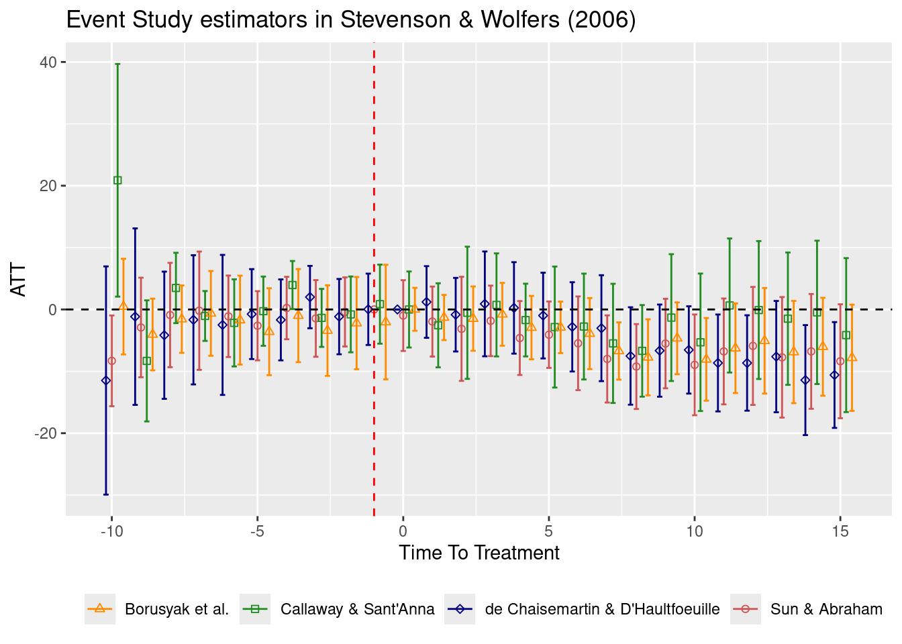
Code call-out 4.4: Synthetic control, difference-in-differences, and synthetic difference-in-differences
This Code Call Out is under construction.
In this code call out, we will explore the use of synthetic control methods as well as extensions into synthetic difference-in-differences with the data using in the original Abadie, Diamond, and Hainmueller (2010) paper. In particular, these data provide a balanced sample from 39 states in the United States covering the period of 1970 to 2000. In particular, the interest in these methods is estimating the impact of the passage of Proposition 99, which was a reform to increase the sales tax paid per package of cigarettes sold in California.
We will begin by opening the data used by Abadie, Diamond, and Hainmueller (2010), and checking the variables available. If we wished we could confirm that this is effectively a balanced panel by tabulating the variable year and state.
df <- read.csv("data/Abadie_et_al_2010.csv")
head(df) state state_name year cigsale lnincome beer age15to24 retprice
1 1 Alabama 1970 89.8 NA NA 0.1788618 39.6
2 1 Alabama 1971 95.4 NA NA 0.1799278 42.7
3 1 Alabama 1972 101.1 9.498476 NA 0.1809939 42.3
4 1 Alabama 1973 102.9 9.550107 NA 0.1820599 42.1
5 1 Alabama 1974 108.2 9.537163 NA 0.1831260 43.1
6 1 Alabama 1975 111.7 9.540031 NA 0.1841921 46.6Here our outcome of interest will be the variable cigsale which records the number of packages sold per capita in each state. The proposition 99 reform was passed in 1989, and we will thus consider 1970-1988 as the pre-period, while the period of 1989-2000 is the treatment period. While Abadie, Diamond, and Hainmueller (2010) actually construct their synthetic control considering both certain pre-period realisations as well as control variables included in their data, we will follow suggestions from Ferman, Pinto, and Possebom (2020) and document a case where we simply use the full set of pre-treatment realisations of the outcome of interest to generate our synthetic control. We will do this below, using the state_name variable to indicate with "California" is the treated state. We will do this using the synth and dataprep routines from the Synth package.
library(Synth)
library(ggplot2)
DataPrep <- dataprep(
foo = df,
time.predictors.prior = 1970:1988,
special.predictors = list(
list("cigsale", 1970, "mean"),
list("cigsale", 1971, "mean"),
list("cigsale", 1972, "mean"),
list("cigsale", 1973, "mean"),
list("cigsale", 1974, "mean"),
list("cigsale", 1975, "mean"),
list("cigsale", 1976, "mean"),
list("cigsale", 1977, "mean"),
list("cigsale", 1978, "mean"),
list("cigsale", 1979, "mean"),
list("cigsale", 1980, "mean"),
list("cigsale", 1981, "mean"),
list("cigsale", 1982, "mean"),
list("cigsale", 1983, "mean"),
list("cigsale", 1984, "mean"),
list("cigsale", 1985, "mean"),
list("cigsale", 1986, "mean"),
list("cigsale", 1987, "mean"),
list("cigsale", 1988, "mean")),
dependent = "cigsale",
unit.variable = "state",
unit.names.variable = "state_name",
time.variable = "year",
treatment.identifier = "California",
controls.identifier = setdiff(unique(df$state_name), "California"),
time.optimize.ssr = 1970:1988,
time.plot = 1970:2000
)
# Fit synthetic control model
Synth <- synth(data.prep.obj = DataPrep, optimxmethod = "Nelder-Mead")
X1, X0, Z1, Z0 all come directly from dataprep object.
****************
searching for synthetic control unit
****************
****************
****************
MSPE (LOSS V): 2.744015
solution.v:
0.05714186 0.06269174 0.07694399 0.07544457 0.07131472 0.07185386 0.07969407 0.07328099 0.05859567 0.0512168 0.04612802 0.04287962 0.0439955 0.04086126 0.03081808 0.02844069 0.02853115 0.02852682 0.03164059
solution.w:
3.662e-07 3.532e-07 0.01510297 0.1092297 1.7462e-06 3.813e-07 4.0907e-06 7.214e-07 4.453e-07 1.047e-06 4.309e-07 1.301e-07 5.318e-07 5.438e-07 1.3562e-06 3.675e-07 4.108e-07 0.2287798 2.1093e-06 0.2041714 0.04648175 5e-09 4.09e-08 7.049e-07 5.597e-07 4.766e-07 5.427e-07 1.285e-07 3.29e-07 6.964e-07 3.481e-07 7.715e-07 0.3962116 3.123e-07 3.79e-07 1.4276e-06 6.299e-07 3.715e-07 # Visualize the Synthetic Control
data.frame(Year = rep(1970:2000, 2),
state = c(rep("California", 31), rep("Synthetic", 31)),
cigsale = c(DataPrep$Y1plot,
DataPrep$Y0plot %*% Synth$solution.w)) |>
ggplot(aes(x = Year, y = cigsale, linetype = state)) +
geom_line(linewidth = 0.7) +
scale_linetype_manual(values = c("California" = "solid",
"Synthetic" = "dashed"),
name = NULL) +
geom_vline(xintercept = 1989, linetype = "dashed", color = "blue",
linewidth = 1) +
scale_y_continuous(breaks = seq(50, 130, 10)) +
scale_x_continuous(breaks = seq(1970, 2000, 5)) +
theme(legend.position = c(0.8, 0.8),
legend.background = element_rect(fill = "gray90"),
legend.key = element_rect(fill = "gray90"))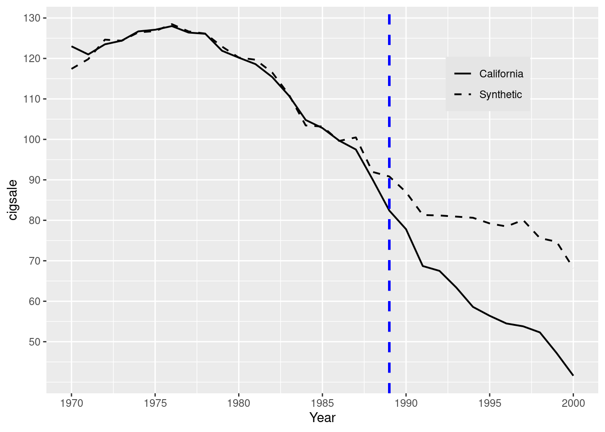
You may note a number of things with the way that we have implemented synth above. The first is that the way we have entered the covariates on which to match (pre-treatment lags of the sales variable) is very cumbersome. It turns out that this is required if we do indeed wish to match on the variable at each pre-treatment period. While the syntax list("cigsale", 1970:1989, "mean") would also be valid as part of the special_predictors list, it is not what we are after, as this would match on mean sales across the whole period, rather than sales in each pre-treatment period. A second is that we have explicitly requested a specific optimisation method (here, Nelder-Mead). This is, in fact, one of the default methods, and if we wish to dig into the documentation (for example by typing ?synth) we could see and explore alternatives, and we would see that weights are at times slightly sensitive to this (for example, if we instead request BFGS, while the final state weighting would result in identical states, the exact weights for each are slightly different) Finally, there is a quite easy way to generate graphical output comparing the treated state to its synthetic control. This graph is produced by the synth’s package routine path.plot. However we can see the state weights as default, the view isn’t friendly so we need to built a data frame for a suitable view. Fortunately, this is quite simple, and we do this below, seeing that (as in the case of Abadie, Diamond, and Hainmueller (2010)), the synthetic control for California is constructed using a combination of Colorado, Connecticut, Montana, Nevada, New Hampshire, and Utah.
library(dplyr)
Weights <- data.frame(state = c(1, 2, 4:39),
Weight = round(Synth$solution.w, 3))
df |> select(state, state_name) |> unique() |>
right_join(Weights, by = "state") state state_name w.weight
1 1 Alabama 0.000
2 2 Arkansas 0.000
3 4 Colorado 0.015
4 5 Connecticut 0.109
5 6 Delaware 0.000
6 7 Georgia 0.000
7 8 Idaho 0.000
8 9 Illinois 0.000
9 10 Indiana 0.000
10 11 Iowa 0.000
11 12 Kansas 0.000
12 13 Kentucky 0.000
13 14 Louisiana 0.000
14 15 Maine 0.000
15 16 Minnesota 0.000
16 17 Mississippi 0.000
17 18 Missouri 0.000
18 19 Montana 0.229
19 20 Nebraska 0.000
20 21 Nevada 0.204
21 22 New Hampshire 0.046
22 23 New Mexico 0.000
23 24 North Carolina 0.000
24 25 North Dakota 0.000
25 26 Ohio 0.000
26 27 Oklahoma 0.000
27 28 Pennsylvania 0.000
28 29 Rhode Island 0.000
29 30 South Carolina 0.000
30 31 South Dakota 0.000
31 32 Tennessee 0.000
32 33 Texas 0.000
33 34 Utah 0.396
34 35 Vermont 0.000
35 36 Virginia 0.000
36 37 West Virginia 0.000
37 38 Wisconsin 0.000
38 39 Wyoming 0.000Here we can see that (as expected) the synthetic control and California follow a very similar trend up to the period in which treatment is applied. This comes precisely from the optimisation procedure, which seeks to construct a synthetic control which minimises this distance. However, we observe that outcomes then diverge between California and the synthetic control in the post-reform period, with a substantially larger decline in California. If we wished to formally conduct hypothesis tests related to this synthetic control procedure, we could conduct the permutation inference procedures laid out in Abadie, Diamond, and Hainmueller (2010) and discussed in Chapter 4. While we will not set this up here it is a worthwhile activity to understand the practicalities of inference. We will also consider below extensions of these methods into synthetic difference-in-differences, additionally documenting inference following permutation procedures.
We will do this using the synthdid library. This implements the synthetic difference-in-differences estimator of Arkhangelsky et al. (2021). In this case, using the same data as above, we can calculate the ATT which reports mean declines between treated and synthetic control units across all post-treatment periods based on a synthetic difference-in-differences comparison. We will see this below, where panel.matrices is used to prepare the data in order to use it in the synthdid_estimate function. The panel.matrices requires to indicate the following arguments: (i) panel, the data frame including only the next columns, (ii) unit the column corresponding to the unit identifier, (iii) time the column corresponding to the time identifier, (iv) outcome the column corresponding to the outcome, and (v) treatment the column corresponding to the time identifier.
library(synthdid)
df2 <- df |>
mutate(treatment = if_else(state_name == "California" &
year >= 1989, 1, 0)) |>
select(state_name, year, cigsale, treatment) |>
panel.matrices(unit = "state_name", time = "year",
outcome = "cigsale", treatment = "treatment")Now the synthdid_estimate function is used with the outcome as the first argument, followed by the number of control units and the number of time periods before the treatment.
res <- synthdid_estimate(Y = df2$Y, N0 = df2$N0, T0 = df2$T0)
summary(res)$estimate
[1] -15.60383
$se
[,1]
[1,] NA
$controls
estimate 1
Nevada 0.124
New Hampshire 0.105
Connecticut 0.078
Delaware 0.070
Colorado 0.058
Illinois 0.053
Nebraska 0.048
Montana 0.045
Utah 0.042
New Mexico 0.041
Minnesota 0.039
Wisconsin 0.037
West Virginia 0.034
North Carolina 0.033
Idaho 0.031
Ohio 0.031
Maine 0.028
Iowa 0.026
$periods
estimate 1
1988 0.427
1986 0.366
1987 0.206
$dimensions
N1 N0 N0.effective T1 T0 T0.effective
1.000 38.000 16.388 12.000 19.000 2.783 As seen there is NA standard error because there is only one treated unit. In this case Arkhangelsky et al. (2021) recommend to use the ‘placebo’ method to compute the standard error
se = sqrt(vcov(res, method = 'placebo'))
data.frame(ATT = res[1], StdErr = se,
t = res[1] / se,
P = 2 * (1 - pnorm(abs(res[1] / se)))) |>
rename(`Std. Err.` = "StdErr", `P>|t|` = "P") ATT Std. Err. t P>|t|
1 -15.60383 9.401435 -1.659728 0.09696912This permutation inference simply consists of recalculating the ATT for each alternative non-treated unit from among all other non-treated units, and calculates the standard error as the standard deviation of these ATTs (refer to further discussion in Section 4.5). Also a series of plots can be done with the package’s routines
synthdid_plot(estimates = res, se.method = "placebo")
synthdid_units_plot(estimates = res, se.method = "placebo")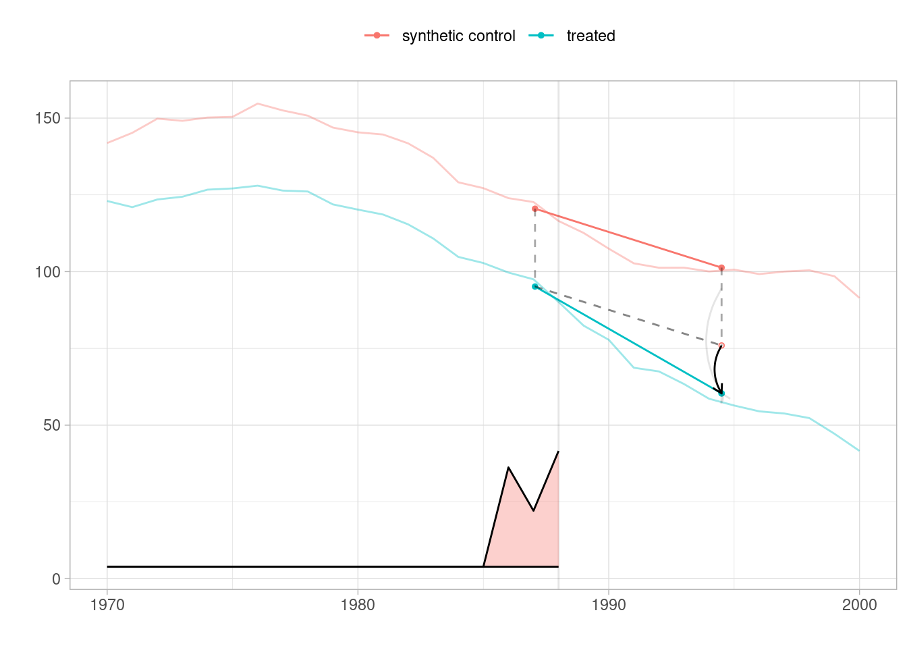
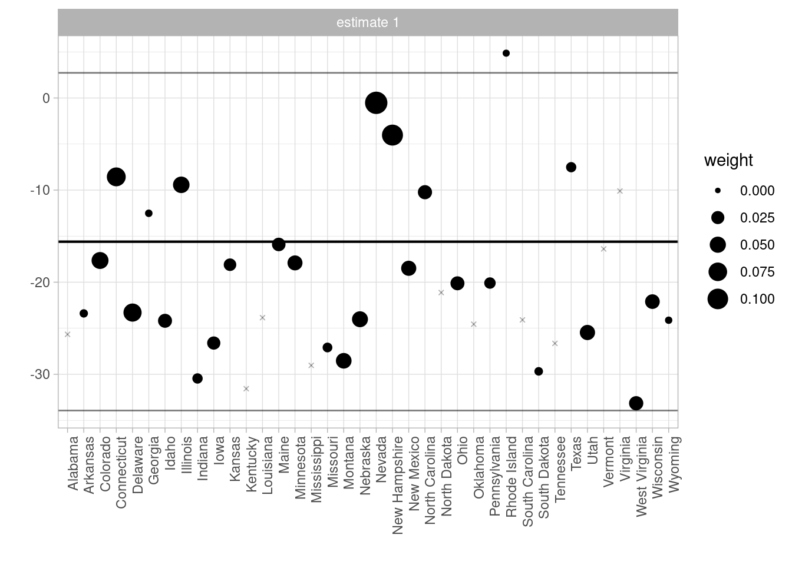
The standard output of this routines is presented above, where we first see the ATT estimate (-15.6) and standard error (8.05). To see how this estimator is constructed, we can refer to Figure 1. In the left-hand panel, we see the outcome of California (red line) and the synthetic unit constructed using weights as laid out in Section 4.6. We additionally see the weights indicated as \(\lambda_t\) in Section 4.6 which assign time-specific weights in calculating the ATT. Specifically, we calculate a DID estimate comparing California to its synthetic control in the pre versus post-treatment period, where the pre-treatment period is generated from the weights indicated in the shaded green area (in this case, 1987, 1988 and 1989). In the right-hand panel, we additionally observe the unit specific weights, \(\omega_t\) in Arkhangelsky et al. (2021) and Section 4.6 of the book, documenting that a range of units are drawn on to generate the synthetic control. The weights of each unit is indicated by the size of points, and unit-specific DID estimates comparing California to each potential donor state are indicated as “Difference” on the vertical axis.
A nice feature of this package is that by sc_estimate one can simply return a standard synthetic control analysis also. This is conducted below using synthdid package, where the only difference is to the usage of sc_estimate. Here, identical output is reported, which simply replicates the procedure from synth documented above. In particular, in Figure 2 we note the clear overlap of trends in the pre-treatment period in the synthetic control analysis, as well as the greater sparsity in unit weights, with most units receiving zero weight in the synthetic control.
res.sc <- sc_estimate(Y = df2$Y, N0 = df2$N0, T0 = df2$T0)
synthdid_plot(estimates = res.sc, se.method = "placebo")
synthdid_units_plot(estimates = res.sc, se.method = "placebo")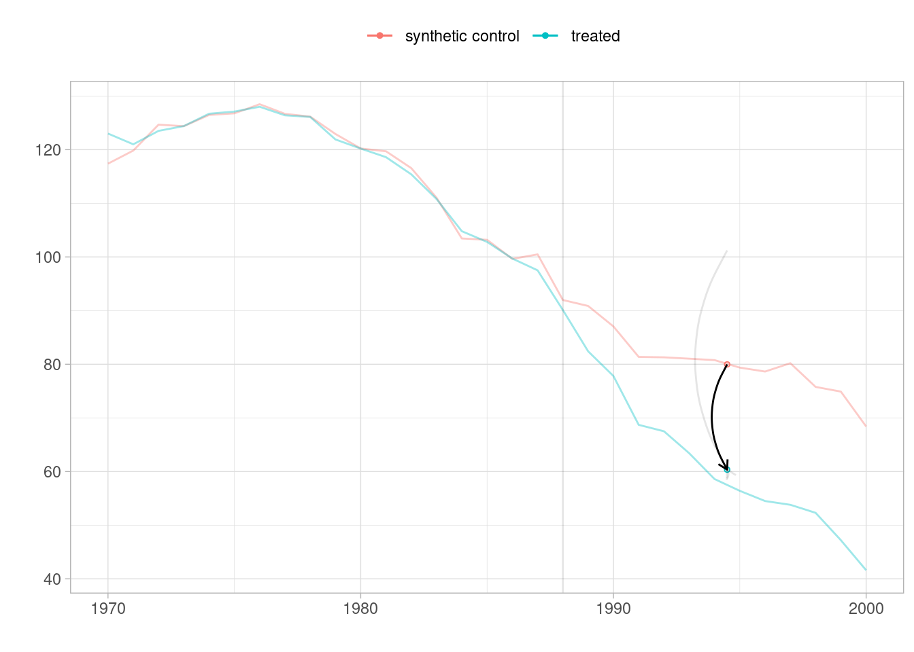
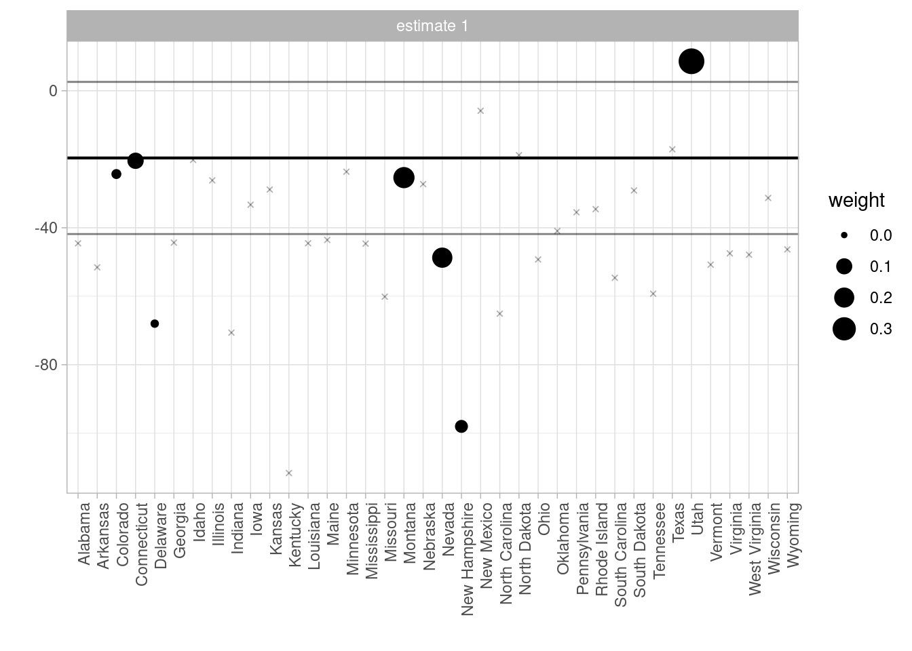
Finally, in the interests of completion, we can also conduct a standard difference-in-differences analysis in the same way, where in this case units are not given any differential weight, implying that trends will simply capture aggregate differences between the two groups. To do this, identical procedures are followed as above, simplying using did_estimate. In this case, documented below, we note a clear divergence in trends starting in the earliest years of the panel, explaining why the treatment effect reported here is much larger than the effects reported with SDID (or SC). The fact that California was clearly trending in a more negative way to the mean of the donor pools suggest that parallel trends is unlikely to be a reasonable assumption. Instead, we may believe that trends may have continued to be more negative in California than in the average across control units, suggesting the DID assumptions should be avoided, in favour of synthetic methods, or some type of alternative strategy which does not rely on parallel trends assumptions.
res.dd <- did_estimate(Y = df2$Y, N0 = df2$N0, T0 = df2$T0)
synthdid_plot(estimates = res.dd, se.method = "placebo")
synthdid_units_plot(estimates = res.dd, se.method = "placebo")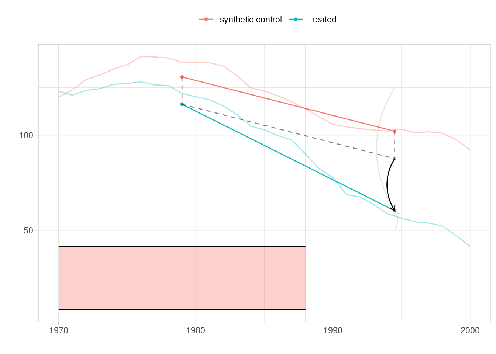
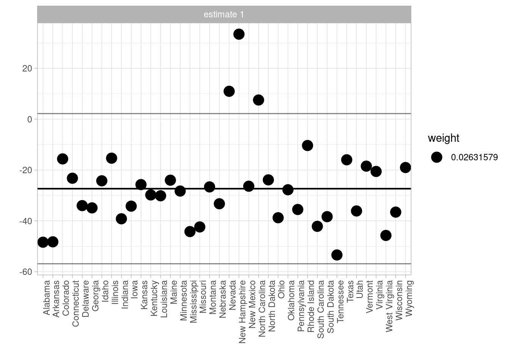
References
Abadie, Alberto, Alexis Diamond, and Jens Hainmueller. 2010. “Synthetic Control Methods for Comparative Case Studies: Estimating the Effect of California’s Tobacco Control Program.” Journal of the American Statistical Association 105 (490): 493–505.
Arkhangelsky, Dmitry, Susan Athey, David A. Hirshberg, Guido W. Imbens, and Stefan Wager. 2021. “Synthetic Difference-in-Differences.” American Economic Review 111 (12): 4088–118. https://doi.org/10.1257/aer.20190159.
Athey, Susan, and Guido W. Imbens. 2022. “Design-based analysis in Difference-In-Differences settings with staggered adoption.” Journal of Econometrics 226 (1): 62–79. https://doi.org/https://doi.org/10.1016/j.jeconom.2020.10.012.
Borusyak, Kirill, Xavier Jaravel, and Jann Spiess. 2024. “Revisiting Event-Study Designs: Robust and Efficient Estimation.” The Review of Economic Studies, February, rdae007. https://doi.org/10.1093/restud/rdae007.
Callaway, Brantly, and Pedro H. C. Sant’Anna. 2021. “Difference-in-Differences with Multiple Time Periods.” Journal of Econometrics. https://doi.org/https://doi.org/10.1016/j.jeconom.2020.12.001.
Chaisemartin, Clément de, and Xavier D’Haultfœuille. 2020. “Two-Way Fixed Effects Estimators with Heterogeneous Treatment Effects.” American Economic Review 110 (9): 2964–96. https://doi.org/10.1257/aer.20181169.
Ferman, Bruno, Cristine Pinto, and Vitor Possebom. 2020. “Cherry Picking with Synthetic Controls.” Journal of Policy Analysis and Management 39 (2): 510–32. https://doi.org/https://doi.org/10.1002/pam.22206.
Fischer, Alexander, and David Roodman. 2021. “Fwildclusterboot: Fast Wild Cluster Bootstrap Inference for Linear Regression Models (Version 0.13.0).” https://cran.r-project.org/package=fwildclusterboot.
Goodman-Bacon, Andrew. 2021. “Difference-in-Differences with Variation in Treatment Timing.” Journal of Econometrics 225 (2): 254–77. https://doi.org/https://doi.org/10.1016/j.jeconom.2021.03.014.
Porter, Catherine, and Danila Serra. 2020. “Gender Differences in the Choice of Major: The Importance of Female Role Models.” American Economic Journal: Applied Economics 12 (3): 226–54. https://doi.org/10.1257/app.20180426.
Roodman, David, Morten Ørregaard Nielsen, James G. MacKinnon, and Matthew D. Webb. 2019. “Fast and Wild: Bootstrap Inference in Stata Using Boottest.” The Stata Journal 19 (1): 4–60.
Stevenson, Betsey, and Justin Wolfers. 2006. “Bargaining in the Shadow of the Law: Divorce Laws and Family Distress.” The Quarterly Journal of Economics 121 (1): 267–88. http://www.jstor.org/stable/25098790.
Sun, Liyang, and Sarah Abraham. 2021. “Estimating Dynamic Treatment Effects in Event Studies with Heterogeneous Treatment Effects.” Journal of Econometrics 225 (2): 175–99. https://doi.org/https://doi.org/10.1016/j.jeconom.2020.09.006.
Footnotes
In Sun and Abraham (2021) you found a detailed explanation on how determinte the set \(C\), for this example \(C\) is the never treated units.↩︎
This can be seen by simply listing the set of adoption years, for example with:
sort(unique(data$X_nfd)).↩︎Excluding \(\ell = -1\).↩︎
This comes from the following property: Let \(X,Y\) be random variables and \(a,b\in\mathbb{R}\), then \(V(aX \pm bY) = a^2V(X) + b^2V(Y) \pm 2abCov(X,Y)\).↩︎